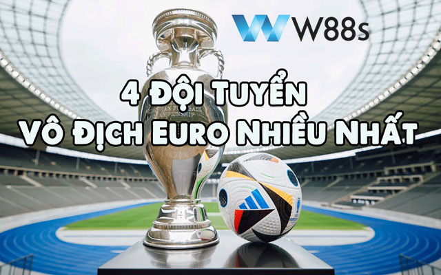
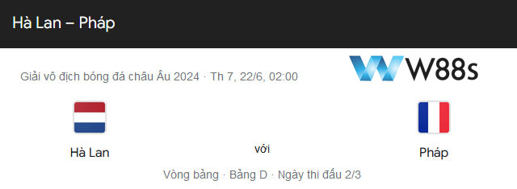
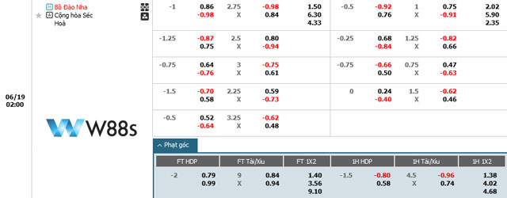

<!DOCTYPE html>
<html>

<head>
  <meta charset="UTF-8" />
  <meta name="viewport" content="width=device-width, initial-scale=1.0" />
  <title>W88s | Link Vào Nhà Cái W88s Chính Thức Mới Nhất 6/2024</title>
  <meta name="description"
    content="W88s là website chuyên cung cấp Link Vào W88s Chính Thức mới nhất trực thuộc Nhà Cái W88s. Đăng ký tài khoản W88s nhận ngay 200k miễn phí">
  <link rel="icon" href="./assets/images/cropped-favicon-logo-w88-32x32.png" sizes="60x60" />
  <meta name="keywords" content=" Nhà cái cá cược hàng đầu tại Việt Nam :Casino online, Nổ hũ ,Tài xỉu, Xóc đĩa, Xổ số, Thể thao, Bắn cá, Đá gà">
  <link rel="stylesheet" href="https://cdnjs.cloudflare.com/ajax/libs/remixicon/3.5.0/remixicon.css"
    integrity="sha512-HXXR0l2yMwHDrDyxJbrMD9eLvPe3z3qL3PPeozNTsiHJEENxx8DH2CxmV05iwG0dwoz5n4gQZQyYLUNt1Wdgfg=="
    crossorigin="anonymous" referrerpolicy="no-referrer" />
  <script src="assets/jquery-3.7.1.min.js"></script>
  <link rel="stylesheet" href="./assets/index.css" />
  <script src="assets/tailwind.js"></script>
</head>

<body class="relative bg-slate-100">

  <div id="showloading" class=" h-screen w-full left-0 bg-[#adadadbe] top-0 fixed duration-1000 z-50">
    <div class=' space-x-2 justify-center flex items-center mt-[20%]'>
      <div class='h-8  w-8 bg-black rounded-full animate-bounce [animation-delay:0s]'></div>
      <div class='h-8 w-8 bg-black rounded-full animate-bounce [animation-delay:-0.3s]'></div>
      <div class='w-8 h-8 bg-black rounded-full animate-bounce'></div>
    </div>
  </div>
  <div id="side-bar"></div>
  <div class="max-w-screen-xl mx-auto bg-white">
    <header class="w-full" id="header"> </header>


    <main>
      <div class="container mx-auto">
        <div class="grid grid-cols-12 gap-5">
          <div class="col-span-12 md:col-span-8  *:my-6 content relative" id="content_left">
            <div class="breadcrumb text-2xl"> </div>


          </div>
          <div class="col-span-12 md:col-span-4  *:my-5" id="content_right"></div>
        </div>
      </div>
  </div>
  </div>
  </main>


  <div id="footer"> </div>
  </div>
  <div id="backtotop"></div>


  <script>
    var active = "";
    function getQueryParams() {
      const params = {};
      const queryString = window.location.search.substring(1);
      const regex = /([^&=]+)=([^&]*)/g;
      let match;
      while ((match = regex.exec(queryString))) {
        params[decodeURIComponent(match[1])] = decodeURIComponent(match[2]);
      }
      return params;
    }
    const params = getQueryParams();
    const id = Number(params.id);
    const items_detail_main_left = [
      {
        id: 1,
        breadcrumb: `<div class="breadcrumb text-2xl"> <b>Trang chủ</b>   \\  <b>Hướng Dẫn Cá Cược</b>  \\  Đội Tuyển Tây Ban Nha: Những Chiến Binh Sẵn Sàng Đối Đầu Ở Euro 2024 </div>`,
        text: `
                            
                            <div class="*:my-5">
                                <h2  class="text-4xl font-bold cursor-pointer">Đội Tuyển Tây Ban Nha: Những Chiến Binh Sẵn Sàng Đối Đầu Ở Euro 2024</h2>

                                <div class="flex items-center  *:flex *:items-center *:text-xl *:text-gray-500 *:gap-3 *:pr-5">
                                    <div class="">
                                        <i class="ri-pencil-fill"></i>
                                        <div>W88s</div>
                                    </div>
                                    <div class="">
                                        <i class="ri-timer-line"></i>
                                        <div>13 THÁNG SÁU 2024</div>
                                    </div>
                                    <div class="">
                                        <i class="ri-calendar-todo-fill"></i>
                                        <div>HƯỚNG DẪN CÁ CƯỢC</div>
                                    </div>
                                </div>
                            </div>

<p><strong>Đội tuyển Tây Ban Nha</strong> – cái tên không còn xa lạ gì với người hâm mộ bóng đá bởi lối chơi tiki-taka đẹp mắt và thành tích vang dội tại các kỳ Euro. Sau màn trình diễn ấn tượng tại vòng loại, La Roja hứa hẹn sẽ là một trong những ứng cử viên nặng ký cho chức vô địch Euro 2024. Hãy cùng <a href="https://w88s.xyz/"><strong>ww88</strong></a> khám phá hành trình chinh phục đỉnh cao của đội bóng này nhé!</p>
<h2><strong>Công Bố Đội Hình Tuyển Tây Ban Nha Tham Dự Euro 2024</strong></h2>
<p>Trong không khí sục sôi của mùa giải, Đội tuyển Tây Ban Nha đã chính thức công bố 26 chiến binh sẽ tham dự Euro 2024, hứa hẹn một chiến dịch đầy kịch tính và mãn nhãn.</p>
<figure>
<figcaption><em>Đội hình dự kiến của đội tuyển Tây Ban Nha tại Euro 2024</em></figcaption>
</figure>
<h3><strong>Các Cầu Thủ Tham Dự</strong></h3>
<p><strong>Danh sách đội tuyển Tây Ban Nha</strong> bao gồm những cái tên đầy kinh nghiệm và tài năng trẻ:</p>
<ul>
<li><strong>Thủ môn</strong>: David Raya, Alex Remiro, Unai Simón</li>
<li><strong>Hậu vệ</strong>: Dani Carvajal, Aymeric Laporte, Pau Torres, Jordi Alba, José Gayà, Eric García, Diego Llorente</li>
<li><strong>Tiền vệ</strong>: Sergio Busquets, Thiago Alcántara, Koke, Fabian Ruiz, Gavi, Mikel Merino, Rodri</li>
<li><strong>Tiền đạo</strong>: Ferran Torres, Alvaro Morata, Ansu Fati, Pablo Sarabia, Gerard Moreno, Mikel Oyarzabal</li>
</ul>
<h3><strong>Đội Hình Dự Kiến Đá Chính Của Đội Tuyển Tây Ban Nha Tại Euro 2024</strong></h3>
<p>Với chiều sâu đội hình và sự đa dạng về lối chơi, HLV Luis Enrique có thể linh hoạt điều chỉnh đội hình tùy theo từng đối thủ. Tuy nhiên, đại diện đá chính của Tay Ban Nha tại Euro 2024 được nhận định sẽ là:</p>
<ul>
<li><strong>Thủ môn</strong>: Unai Simon</li>
<li><strong>Hậu vệ</strong>: Gồm các nhân tố như Marc Cucurella, Aymeric Laporte, Robin Le Normand, Dani Carvajal</li>
<li><strong>Tiền vệ</strong>: Pedri, Rodri Hernandez, Fabian Ruiz</li>
<li><strong>Tiền đạo</strong>: Nico Williams, Alvaro Morata, Ferran Torres</li>
</ul>
<p>Với sự chuẩn bị này, ĐT Tây Ban Nha hứa hẹn sẽ là một đối thủ đáng gờm tại giải đấu.</p>
<p><strong>Có thể bạn quan tâm: </strong><a href="https://w88s.xyz/doi-tuyen-y/"><strong>Đội Tuyển Ý Euro 2024: Azzurri Liệu Có Bảo Vệ Được Ngôi Vô Địch?</strong></a></p>
<h2><strong>Thành Tích Vang Dội Của Đội Tuyển Tây Ban Nha Tại Các Kỳ Euro</strong></h2>
<figure>
<figcaption><em>Đội quân màu đỏ đã có 3 lần vô địch Euro</em></figcaption>
</figure>
<p><strong>Đội tuyển Tây Ban Nha</strong> được xem là một trong những “ông vua” của bóng đá châu Âu với thành tích vô cùng ấn tượng tại các kỳ Euro. Hãy cùng điểm qua những dấu mốc vàng son trong lịch sử chinh phục đỉnh cao của La Roja tại giải đấu danh giá này.</p>
<ul>
<li><strong>Lịch Sử Vàng Son Tại Euro: </strong>Đội tuyển La Roja đã từng ba lần nâng cao chiếc cúp vô địch châu Âu, vào các năm 1964, Euro 2008, và 2012, khẳng định sức mạnh và đẳng cấp của mình trên đấu trường châu lục.</li>
<li><strong>Kết Quả Tại Euro 2020: </strong>Dù là một trong những ứng viên hàng đầu, Đội Quân Màu Đỏ Tây Ban Nha chỉ dừng bước tại bán kết Euro 2020, sau khi để thua Italia trong loạt đá luân lưu cân não.</li>
<li><strong>Hành Trình Tại Euro 2024 vòng loại: </strong>Tây Ban Nha thể hiện sức mạnh vượt trội khi dẫn đầu bảng xếp hạng vòng loại Euro 2024 – Bảng B, bỏ xa các đối thủ như Scotland, Na uy, Gruzia và Đảo Síp để xếp top 1 bxh vòng loại Euro 2024, từ đó ghi tên mình vào vòng chung kết Euro 2024.</li>
</ul>
<h2><strong>Hành Trình Và Cơ Hội Vô Địch Tại Euro 2024 Của Tây Ban Nha</strong></h2>
<p>Tại giải vô địch bóng đá châu âu 2024, đường đua của Đội tuyển Tây Ban Nha trong bảng B được dự báo là sẽ vô cùng kịch tính và hấp dẫn, mở ra cơ hội để “La Roja” thể hiện sức mạnh vốn có của mình.</p>
<h3><strong>Lịch Thi Đấu Của Đội Tuyển Tây Ban Nha Ở Bảng B</strong></h3>
<figure>
<figcaption><em>Lịch thi đấu của ĐT Tây Ban Nha tại vòng bảng Euro 2024</em></figcaption>
</figure>
<p>Tây Ban Nha sẽ bắt đầu chiến dịch của mình tại Munich vào ngày 14/6 với trận đấu khai mạc. Sau đó, đội sẽ tiếp tục gặp các đội còn lại của bảng B vào các ngày 18/6 và 22/6 tại Frankfurt và Leipzig.</p>
<p>Lịch thi đấu cụ thể: </p>
<ul>
<li>23:00 ngày 15/6: Tây Ban Nha – Croatia</li>
<li>2:00 ngày 21/6: Tây Ban Nha – Italia</li>
<li>2:00 ngày 25/6: Albania – Tây Ban Nha</li>
</ul>
<p>Các trận đấu này sẽ là những thử thách đáng kể cho đội tuyển Tây Ban Nha, khi họ phải đối mặt với những đội bóng mạnh và giàu kinh nghiệm tại châu Âu.</p>
<h3><strong>Dự Đoán Tỷ Lệ Vô Địch</strong></h3>
<p>Dựa trên phong độ hiện tại và sự chuẩn bị kỹ lưỡng, các chuyên gia đánh giá Tây Ban Nha có khoảng 14% cơ hội để đăng quang tại giải đấu lần này. Với lối chơi đã được chứng minh qua các chiến thắng vang dội trước đây, họ chắc chắn là một trong những đối thủ nặng ký cho bất kỳ đội bóng nào.</p>
<h2><strong>Lời Kết</strong></h2>
<p><strong>Đội tuyển Tây Ban Nha</strong> với dàn sao đồng đều, lối chơi tấn công mãn nhãn và sự dẫn dắt tài tình của HLV Luis Enrique đang hừng hực khí thế chinh phục Euro 2024. Với những màn trình diễn bùng nổ và gieo rắc nỗi ám ảnh cho mọi đối thủ, La Roja được dự đoán sẽ là một trong những ứng cử viên nặng ký cho chức vô địch. Hãy cùng cổ vũ cho hành trình chinh phục đỉnh cao của Tây Ban Nha tại giải đấu năm nay!</p>
<p>Mọi thông tin chi tiết vui lòng liên hệ với đội ngũ hỗ trợ của W88s theo:</p>
<ul>

<li>Website: <a href="https://w88s.xyz/">https://w88s.xyz/</a></li>
</ul>`,
      },
      {
        id: 2,
        breadcrumb: `<div class="breadcrumb text-2xl"> <b>Trang chủ</b>   \\  <b>Hướng Dẫn Cá Cược</b>  \\  Đội Tuyển Ý Euro 2024: Azzurri Liệu Có Bảo Vệ Được Ngôi Vô Địch? </div>`,
        text: `
                            
                            <div class="*:my-5">
                                <h2  class="text-4xl font-bold cursor-pointer">Đội Tuyển Ý Euro 2024: Azzurri Liệu Có Bảo Vệ Được Ngôi Vô Địch?</h2>

                                <div class="flex items-center  *:flex *:items-center *:text-xl *:text-gray-500 *:gap-3 *:pr-5">
                                    <div class="">
                                        <i class="ri-pencil-fill"></i>
                                        <div>W88s</div>
                                    </div>
                                    <div class="">
                                        <i class="ri-timer-line"></i>
                                        <div>11 THÁNG SÁU 2024</div>
                                    </div>
                                    <div class="">
                                        <i class="ri-calendar-todo-fill"></i>
                                        <div>HƯỚNG DẪN CÁ CƯỢC</div>
                                    </div>
                                </div>
                            </div>
                            <p><strong>Đội tuyển Ý</strong>, cái tên không hề xa lạ với người hâm mộ bóng đá, đặc biệt là sau màn đăng quang đầy cảm xúc tại Euro 2020. Trở lại với Euro 2024, liệu thầy trò HLV Roberto Mancini có thể bảo vệ thành công ngôi vương hay sẽ nhường chỗ cho những ứng cử viên khác? Hãy cùng <a href="https://w88s.xyz/" target="_blank" rel="nofollow"><strong>w88</strong></a> khám phá hành trình của <strong>đội tuyển Ý</strong> tại giải đấu năm nay!</p>
<h2 id="ftoc-heading-1" class="ftwp-heading"><strong>Danh Sách Cầu Thủ Tham Dự Euro 2024 Của Đội Tuyển Ý</strong></h2>
<p><strong>Đội tuyển Ý</strong> đã chính thức công bố danh sách 26 cầu thủ tham dự Euro 2024, hứa hẹn mang đến một hành trình đầy cảm xúc và kịch tính. Dưới sự dẫn dắt của HLV Roberto Mancini, các Azzurri sẵn sàng chinh phục vinh quang tại giải đấu danh giá nhất châu lục.</p>
<h3 id="ftoc-heading-2" class="ftwp-heading"><strong>26 Cái Tên Đến Với Euro 2024 Của Đội Tuyển Ý</strong></h3>
<p>Đây là danh sách đội tuyển ý euro 2024 mà đương kim vô địch lựa chọn mang đến đấu trường Châu âu:</p>
<figure id="attachment_10136" class="wp-caption aligncenter">
<figcaption id="caption-attachment-10136" class="wp-caption-text"><em>Điểm danh 26 cầu thủ của đội tuyển Ý tại Euro 2024</em></figcaption>
</figure>
<p><strong>Thủ môn:</strong></p>
<ul>
<li>Gianluigi Donnarumma (PSG)</li>
<li>Guglielmo Vicario (Từ CLB Tottenham Hotspur)</li>
<li>Alex Meret (Napoli)</li>
</ul>
<p><strong>Hậu vệ:</strong></p>
<ul>
<li>Alessandro Bastoni (được triệu tập từ Inter Milan)</li>
<li>Gianluca Mancini (AS Roma)</li>
<li>Leonardo Bonucci (Juventus)</li>
<li>Federico Dimarco (Inter Milan)</li>
<li>Matteo Darmian (Inter Milan)</li>
<li>Giovanni Di Lorenzo (câu lạc bộ Napoli)</li>
<li>Raoul Bellanova (Torino FC)</li>
<li>Alessandro Buongiorno (đến từ CLB Torino FC)</li>
<li>Andrea Cambiaso (Juventus)</li>
</ul>
<p><strong>Tiền vệ:</strong></p>
<ul>
<li>Nicolò Barella (Inter Milan)</li>
<li>Davide Frattesi (Inter Milan)</li>
<li>Bryan Cristante (AS Roma)</li>
<li>Lorenzo Pellegrini (AS Roma)</li>
<li>Nicolò Fagioli (Juventus)</li>
<li>Jorginho (Arsenal)</li>
<li>Samuele Ricci (Torino FC)</li>
<li>Michael Folorunsho (Từ Hellas Verona)</li>
</ul>
<p><strong>Tiền đạo gồm các ngôi sao:</strong></p>
<ul>
<li>Federico Chiesa (Juventus)</li>
<li>Giacomo Raspadori (Napoli)</li>
<li>Matteo Retegui (Genoa CFC)</li>
<li>Gianluca Scamacca (từ CLB Atalanta BC)</li>
<li>Mattia Zaccagni (Lazio)</li>
<li>Stephan El Shaarawy (AS Roma)</li>
</ul>
<p><strong>Xem thêm: </strong><a href="https://w88s.xyz/doi-tuyen-duc/" target="_blank" rel="nofollow"><strong>Khám Phá Sức Mạnh Đội Tuyển Đức Tại Vòng Chung Kết Euro 2024</strong></a></p>
<h3 id="ftoc-heading-3" class="ftwp-heading"><strong>Những Trụ Cột Trong Đội Hình Italia Dự Euro 2024</strong></h3>
<p>Trong số các cái tên được gọi lên, có những cầu thủ được xem là trụ cột không thể thiếu trong đội hình mạnh nhất của đội tuyển ý euro 2024. Với sự chuẩn bị kỹ lưỡng, đây là những người được kỳ vọng sẽ đưa đội bóng áo thiên thanh tiến xa trong giải đấu.</p>
<ul>
<li><strong>Thủ môn:</strong> Gianluigi Donnarumma</li>
<li><strong>Hậu vệ:</strong> Alessandro Bastoni, Gianluca Mancini, Leonardo Bonucci</li>
<li><strong>Hậu vệ cánh:</strong> Federico Dimarco, Raoul Bellanova</li>
<li><strong>Tiền vệ phòng ngự:</strong> Nicolò Barella, Jorginho</li>
<li><strong>Tiền vệ tấn công:</strong> Lorenzo Pellegrini, Nicolò Fagioli</li>
<li><strong>Tiền đạo:</strong> Tiền đạo cánh Federico Chiesa, Giacomo Raspadori</li>
</ul>
<p>HLV đội tuyển ý có thể sẽ sử dụng sơ đồ chiến thuật 3-4-3 hoặc 3-4-2-1, tùy theo đối phương và tình hình thực tế của trận đấu. Đội hình này hứa hẹn sẽ mang lại sự kết hợp hoàn hảo giữa sức mạnh hàng thủ và hàng công sắc bén, đồng thời khai thác tối đa các khu vực trên sân để tạo ra lợi. </p>
<p>Với sự trở lại của những mũi khoan như Jorginho và Barella, hàng tiền vệ của Italia chắc chắn sẽ là điểm nhấn khó quên trong mỗi trận đấu tại Euro 2024.</p>
<h2 id="ftoc-heading-4" class="ftwp-heading"><strong>Thông Tin Chi Tiết Về Đội Tuyển Ý Trước Thềm Euro 2024</strong></h2>
<p><strong>Đội tuyển Ý</strong> đang tràn đầy tự tin hướng đến Euro 2024 với mục tiêu bảo vệ ngôi vương. Hãy cùng điểm qua những thông tin quan trọng về đội bóng này trước thềm giải đấu.</p>
<h3 id="ftoc-heading-5" class="ftwp-heading"><strong>Lịch thi đấu vòng bảng của Ý tại Euro 2024</strong></h3>
<figure id="attachment_10133" class="wp-caption aligncenter">
<figcaption id="caption-attachment-10133" class="wp-caption-text"><em>Lịch thi đấu của đội tuyển ý tại euro 2024</em></figcaption>
</figure>
<p>Đội tuyển Ý, đương kim vô địch, sẽ bắt đầu hành trình của mình tại Euro 2024 trong bảng B, được mệnh danh là “bảng tử thần”. Đây là lịch thi đấu đội tuyển ý chi tiết:</p>
<ul>
<li>16/6, 02:00: Ý vs Albania</li>
<li>21/6, 02:00: Tây Ban Nha vs Ý</li>
<li>25/6, 02:00: Croatia vs Ý</li>
</ul>
<h3 id="ftoc-heading-6" class="ftwp-heading"><strong>Thành Tích Của Đội Tuyển Ý Trên Đấu Trường Quốc Tế</strong></h3>
<p>Tuyển quốc gia Ý luôn được đánh giá cao bởi lối chơi phòng ngự chặt chẽ và hiệu quả, cùng tinh thần thi đấu quả cảm và máu lửa. Điều đó được chứng minh quá các thành tích: </p>
<ul>
<li><strong>Đội tuyển Ý</strong> là một trong những đội bóng thành công nhất lịch sử bóng đá thế giới với 4 lần vô địch World Cup (1934, 1938, 1982, 2006) và 2 lần vô địch Euro (1968, 2020).</li>
<li>Ngoài ra, Italia còn sở hữu nhiều thành tích ấn tượng khác như: 2 lần vô địch Olympic (1928, 1936), 1 lần vô địch UEFA Nations League (2021).</li>
<li><strong>ĐT Ý</strong> được xếp hạng 6 trên bảng xếp hạng FIFA thế giới tính đến tháng 6 năm 2024.</li>
</ul>
<h3 id="ftoc-heading-7" class="ftwp-heading"><strong>Kết Quả Đội Tuyển Ý Tại Euro 2020</strong></h3>
<p>Tại mùa giải Euro 2020, Italia đã có hành trình đầy cảm xúc và đăng quang một cách ngoạn mục. Sau khi trải qua vòng bảng đầy gian nan, Azzurri đã xuất sắc đánh bại các ông lớn như Bỉ, Tây Ban Nha và Anh để giành lấy chiếc cúp vô địch.</p>
<p>Chiến thắng này đánh dấu sự trở lại mạnh mẽ của đội tuyển Ý sau nhiều năm chìm đắm trong thất bại. HLV Roberto Mancini đã thổi hồn vào lối chơi của đội tuyển ý euro 2020 và giúp họ trở thành một đội bóng đáng gờm trên mọi đấu trường.</p>
<h3 id="ftoc-heading-8" class="ftwp-heading"><strong>Phong Độ Gần Đây Của Ý</strong></h3>
<p><strong>Đội tuyển Ý </strong>đã thể hiện phong độ khá ổn định trong quá trình vòng loại Euro 2024 tại Đức. Trong khuôn khổ bảng C, Ý cạnh tranh cùng với các đội bóng như Anh, Ukraine, Bắc Macedonia, và Malta. Sau một loạt trận đấu quyết liệt, Ý đã kết thúc giai đoạn vòng loại bằng vị trí thứ hai trong bảng, đảm bảo suất tham dự vòng chung kết sau trận hòa không bàn thắng với Ukraine.</p>
<p>Chuẩn bị cho đợt tập trung Euro 2024, Ý đã sắp xếp nhiều trận giao hữu để rèn giũa lối chơi và chiến thuật. Trong đó, có trận hòa 0-0 với Thổ Nhĩ Kỳ và dự kiến sẽ có thêm các trận đấu với Bosnia-Herzegovina và các đội khác. </p>
<p>Những trận đấu này giúp đội tuyển Ý kiểm tra và cải thiện phong độ, đồng thời giúp HLV Spalletti đánh giá và điều chỉnh chiến thuật phù hợp trước khi bước vào các trận đấu chính thức tại Euro 2024.</p>
<h2 id="ftoc-heading-9" class="ftwp-heading"><strong>Đánh Giá Khả Năng Của Đội Tuyển Ý Tại Euro 2024</strong></h2>
<figure id="attachment_10134" class="wp-caption aligncenter">
<figcaption id="caption-attachment-10134" class="wp-caption-text"><em>Ý là đương kim vô địch euro 2020</em></figcaption>
</figure>
<p>Đội tuyển Ý, với danh hiệu ĐKVĐ, đang bước vào Euro 2024 dưới sự kỳ vọng nặng nề để lặp lại thành công của mình. Để giúp người hâm mộ và người chơi cá cược hiểu rõ hơn, dưới đây là những phân tích cụ thể về sức mạnh và những thách thức mà đội bóng này có thể đối mặt:</p>
<p><strong>. Điểm mạnh:</strong></p>
<ul>
<li><strong>Hàng tiền vệ chất lượng cao:</strong> Với các cầu thủ tấn công như Jorginho, Nicolo Barella, và Lorenzo Pellegrini, hàng tiền vệ của Ý có khả năng kiểm soát bóng và phát động tấn công mạnh mẽ, là chìa khóa cho lối chơi thống trị mà họ hướng tới.</li>
<li><strong>Chiến thuật linh hoạt:</strong> HLV Luciano Spalletti nổi tiếng với khả năng điều chỉnh chiến thuật phù hợp với từng đối thủ, giúp Ý có thể chủ động trong các không gian trận cầu lớn.</li>
</ul>
<p><strong>. Điểm yếu:</strong></p>
<ul>
<li><strong>Kỳ vọng vô địch:</strong> Với tư cách là đương kim vô địch, mọi động thái của Ý đều nằm dưới kính lúp phân tích.</li>
<li><strong>Hàng phòng ngự còn bất ổn:</strong> Dù còn đang phát triển để vươn tới đẳng cấp của các thế hệ trước như bộ đôi Chiellini và Bonucci, nhưng với những tài năng trẻ như Alessandro Bastoni, hàng phòng ngự của Ý hứa hẹn sẽ ngày càng vững chắc trong tương lai.</li>
</ul>
<p>Dù đối mặt với những thách thức, <strong>đội tuyển Ý </strong>vẫn là một trong những ứng cử viên hàng đầu cho chức vô địch. Họ cần phát huy tối đa điểm mạnh và quản lý tốt áp lực để có thể tiến sâu và hy vọng bảo vệ thành công ngôi vương. Các tifosi và người chơi cá cược nên theo dõi sát sao từng trận đấu để đánh giá khả năng thực sự của đội bóng này.</p>
<p>Mọi thông tin chi tiết vui lòng liên hệ với đội ngũ hỗ trợ của W88s theo:</p>
<ul>

<li>Website: <a href="https://w88s.xyz/" target="_blank" rel="nofollow">https://w88s.xyz/</a></li>

</ul>
                            
                            `
      },
      {
        id: 3,
        breadcrumb: `<div class="breadcrumb text-2xl"> <b>Trang chủ</b>   \\  <b>Hướng Dẫn Cá Cược</b>  \\  Khám Phá Sức Mạnh Đội Tuyển Đức Tại Vòng Chung Kết Euro 2024`,
        text: `
                            
                            <div class="*:my-5">
                                <h2  class="text-4xl font-bold cursor-pointer">Đội Tuyển Tây Ban Nha: Những Chiến Binh Sẵn Sàng Đối Đầu Ở Euro 2024</h2>

                                <div class="flex items-center  *:flex *:items-center *:text-xl *:text-gray-500 *:gap-3 *:pr-5">
                                    <div class="">
                                        <i class="ri-pencil-fill"></i>
                                        <div>W88s</div>
                                    </div>
                                    <div class="">
                                        <i class="ri-timer-line"></i>
                                        <div>11 THÁNG SÁU 2024</div>
                                    </div>
                                    <div class="">
                                        <i class="ri-calendar-todo-fill"></i>
                                        <div>HƯỚNG DẪN CÁ CƯỢC</div>
                                    </div>
                                </div>
                            </div>
                            <p>Khi UEFA Euro 2024 khởi tranh, <strong>Đội tuyển Đức</strong> đang nhận được sự chú ý không nhỏ với bảng thành tích ấn tượng và kỳ vọng cao cho mùa giải này. Dưới sự dẫn dắt của HLV Julian Nagelsmann, “Cỗ xe tăng” sẵn sàng lăn bánh trên sân nhà, hứa hẹn mang đến những màn trình diễn mãn nhãn. Hãy cùng <a href="https://w88s.xyz/" target="_blank" rel="nofollow"><strong>W88s</strong></a> phân tích sâu hơn về chiến lược và những con át chủ bài có thể giúp đội nhà lên ngôi vô địch châu Âu qua bài viết sau.</p>
<h2 id="ftoc-heading-1" class="ftwp-heading"><strong>Công Bố Đội Hình Đội Tuyển Đức Tại Euro 2024</strong></h2>
<p>Với kỳ EURO 2024 sắp tới, <strong>Đội tuyển Đức</strong> đã chính thức công bố đội hình tham dự, hứa hẹn sẽ là một trong những đối thủ đáng gờm nhất tại giải đấu. Dưới đây là danh sách đội hình đức euro 2024, cùng với vai trò và đóng góp của họ trong chiến lược chinh phục châu Âu của HLV Julian Nagelsmann.</p>
<figure id="attachment_9768" class="wp-caption aligncenter">
<figcaption id="caption-attachment-9768" class="wp-caption-text"><em>Danh sách đội tuyển Đức tham dự Euro 2024</em></figcaption>
</figure>
<p><strong>Thủ môn:</strong></p>
<ul>
<li>Manuel Neuer (Bayern Munich): Là linh hồn của khung gỗ, Neuer tiếp tục giữ vai trò chủ chốt trong khả năng phòng ngự của đội.</li>
<li>Marc-Andre ter Stegen (Barca): Dự bị sẵn sàng thế chỗ Neuer bất cứ khi nào cần thiết, đặc biệt trong trường hợp chấn thương.</li>
<li>Alex Nuebel (Stuttgart), Oliver Baumann (Hoffenheim): Hai thủ môn này hoàn tất bộ tứ thủ môn, sẵn sàng nhập cuộc khi được gọi.</li>
</ul>
<p><strong>Hậu vệ:</strong></p>
<ul>
<li>Joshua Kimmich (Bayern Munich): Không chỉ giỏi phòng ngự, Kimmich còn là một mối đe dọa thực sự từ các pha tấn công biên.</li>
<li>Antonio Rudiger (Real Madrid), Jonathan Tah (Bayer Leverkusen): Cặp trung vệ chính, mang lại sự chắc chắn cho hàng thủ.</li>
<li>Benjamin Henrichs (RB Leipzig), David Raum (RB Leipzig), Robin Koch (Frankfurt), Nico Schlotterbeck (Dortmund), Maximilian Mittelstaedt (Stuttgart): Đội hình hậu vệ đa dạng, sẵn sàng cho mọi tình huống trận đấu.</li>
</ul>
<p><strong>Tiền vệ:</strong></p>
<ul>
<li>Toni Kroos (Real Madrid): Nhạc trưởng sân cỏ, luôn sẵn sàng kiến tạo và dẫn dắt lối chơi.</li>
<li>Ilkay Gundogan (Barca), Jamal Musiala (Bayern Munich), Leroy Sane (Bayern Munich): Những cái tên này bảo đảm sự linh hoạt và sức mạnh cho tuyến giữa.</li>
<li>Florian Wirtz (Bayer Leverkusen), Chris Fuehrich (Stuttgart), Robert Andrich (Bayer Leverkusen), Pascal Gross (Brighton), Aleksandar Pavlovic (Bayern Munich): Cung cấp chiều sâu và các lựa chọn tấn công đa dạng cho huấn luyện viên.</li>
</ul>
<p><strong>Tiền đạo:</strong></p>
<ul>
<li>Niclas Fullkrug (Dortmund), Kai Havertz (Arsenal): Cả hai đều là lựa chọn hàng đầu cho vị trí trung phong, sẵn sàng săn bàn thắng.</li>
<li>Thomas Mueller (Bayern Munich), Deniz Undav (Stuttgart), Maximilian Beier (Hoffenheim): Đảm bảo đa dạng trong phong cách chơi và khả năng ghi bàn từ mọi vị trí.</li>
</ul>
<h2 id="ftoc-heading-2" class="ftwp-heading"><strong>Thông Tin Chi Tiết Về Đội Tuyển Đức Tại Euro 2024</strong></h2>
<p>Đội tuyển Đức luôn được kỳ vọng sẽ là một trong những ứng viên hàng đầu tại mọi giải đấu lớn, và Euro 2024 không phải là ngoại lệ. Sau đây là cái nhìn chi tiết về các yếu tố quan trọng sẽ định hình chiến dịch của họ tại giải đấu này.</p>
<h3 id="ftoc-heading-3" class="ftwp-heading"><strong>Sự Dẫn Dắt Của HLV Julian Nagelsmann</strong></h3>
<figure id="attachment_9770" class="wp-caption aligncenter">
<figcaption id="caption-attachment-9770" class="wp-caption-text"><em>HLV Julian Nagelsmann dẫn dắt đức tại Euro 2024</em></figcaption>
</figure>
<p>Julian Nagelsmann, vị thuyền trưởng trẻ tuổi của <strong>Đội tuyển Đức</strong>, đã được bổ nhiệm với kỳ vọng sẽ đưa đội bóng này đến những thành công mới tại Euro 2024. Với bề dày kinh nghiệm và phong cách huấn luyện hiện đại, Nagelsmann được xem là linh hồn chiến thuật cho “Cỗ xe tăng Đức”.</p>
<ul>
<li><strong>Phong cách huấn luyện:</strong> Nagelsmann ưa chuộng lối chơi tấn công dựa trên sự kiểm soát bóng và áp lực cao, phù hợp với năng lực của các cầu thủ Đức hiện nay.</li>
<li><strong>Mục tiêu Euro 2024:</strong> Dưới sự dẫn dắt của Nagelsmann, <strong>doi tuyen duc</strong> không chỉ nhắm đến việc giành chiến thắng trong từng trận đấu mà còn đặt mục vô địch euro 2024.</li>
</ul>
<h3 id="ftoc-heading-4" class="ftwp-heading"><strong>Các Cầu Thủ Chủ Chốt Trong Đội Hình Đức</strong></h3>
<p><strong>Danh sách đội tuyển đức euro 2024 </strong>sở hữu nhiều cầu thủ đầy tài năng, sẵn sàng thể hiện khả năng và đóng góp cho mục tiêu chung của đội tại Euro 2024.</p>
<ul>
<li><strong>Manuel Neuer (Thủ môn):</strong> Với kinh nghiệm dày dạn và khả năng chỉ huy hàng phòng ngự, Neuer vẫn là lựa chọn số một dưới khung thành.</li>
<li><strong>Joshua Kimmich (Hậu vệ/phòng ngự):</strong> Nổi tiếng với khả năng chuyền bóng chính xác và đọc trận đấu, Kimmich là trụ cột không thể thiếu ở hàng phòng ngự lẫn tấn công.</li>
<li><strong>Toni Kroos và Ilkay Gundogan (Tiền vệ):</strong> Cả hai cầu thủ này đều có khả năng kiểm soát trận đấu và phát động tấn công, đóng góp không nhỏ vào lối chơi chung của đội.</li>
<li><strong>Thomas Müller (Tiền đạo):</strong> Với kinh nghiệm và khả năng săn bàn thượng thừa, Müller luôn là mối đe dọa đối với mọi hàng phòng ngự.</li>
<li><strong>Kai Havertz và Jamal Musiala (Tiền đạo):</strong> Sự trẻ trung, nhanh nhẹn và khả năng kết thúc tốt của họ sẽ là chìa khóa trong việc phá vỡ hàng thủ đối phương.</li>
</ul>
<h3 id="ftoc-heading-5" class="ftwp-heading"><strong>Hành Trình Đội Tuyển Đức Tại Vòng Loại Euro 2024</strong></h3>
<p>Do là nước chủ nhà của Euro 2024, Đội tuyển Đức đã được miễn trải qua vòng loại, thay vào đó, họ đã tham gia một số trận đấu giao hữu để chuẩn bị cho giải đấu. Có thể thấy, “cỗ xe tăng” đang lên dây cót để có được phong độ tốt nhất sau có những kết quả không mấy khả quan:</p>
<ul>
<li>Trong nửa đầu năm 2023, dù Đức đã trải qua một chuỗi 5 trận không thắng, bao gồm 1 trận hòa và 4 trận thua, nhưng thay đổi này đã mở đường cho việc HLV Hansi Flick rời khỏi vị trí dẫn dắt, tạo cơ hội cho sự khởi đầu mới và những chiến lược tích cực hơn cho đội tuyển.</li>
<li>Sau đó, Julian Nagelsmann được bổ nhiệm và đã ghi dấu ấn bằng việc giành chiến thắng trong 2 trận đấu với Pháp và 1 trận với Hà Lan, tuy nhiên, Đức cũng chỉ hòa Mexico và để thua Áo và Thổ Nhĩ Kỳ. Dù vậy, phong độ và lối chơi của đội đã có những cải thiện đáng kể khi ngày khai mạc Euro 2024 đang đến gần.</li>
</ul>
<p><strong><em>Xem thêm</em></strong><strong>: </strong><a href="https://w88s.xyz/giai-vo-dich-chau-au/" target="_blank" rel="nofollow"><strong>Giải Vô Địch Châu Âu: Thông Tin Về Ngày Hội Bóng Đá Lớn Nhất Châu Âu</strong></a></p>
<h3 id="ftoc-heading-6" class="ftwp-heading"><strong>Lịch Thi Đấu Vòng Bảng Euro 2024 Của Đức</strong></h3>
<p>Đức, với tư cách là chủ nhà, sẽ bắt đầu chiến dịch Euro 2024 của mình với những trận đấu trong bảng A:</p>
<ul>
<li><strong>Lượt trận đầu tiên:</strong> Đức vs Scotland vào lúc 2h00 ngày 15/6. </li>
<li><strong>Lượt trận thứ hai:</strong> Đức vs Hungary vào lúc 23h00 ngày 19/6. </li>
<li><strong>Lượt trận thứ ba:</strong> Đức vs Thụy Sĩ vào lúc 2h00 ngày 24/6.</li>
</ul>
<h2 id="ftoc-heading-7" class="ftwp-heading"><strong>Thành Tích Đội Tuyển Đức Các Kỳ Euro Trước</strong></h2>
<p><strong>Đội tuyển Đức</strong> đã có một lịch sử dày dặn tại các kỳ Euro, luôn là đối thủ đáng gờm với nhiều đội bóng.</p>
<h3 id="ftoc-heading-8" class="ftwp-heading"><strong>Số Lần Vô Địch Euro của Đức</strong></h3>
<p>Đội tuyển Đức đã có thành tích vô địch Euro ba lần, đó là các năm 1972, 1980 và 1996. Mỗi chiến thắng không chỉ khẳng định vị thế của Đức trong bóng đá châu Âu mà còn chứng tỏ phong độ đỉnh cao của bóng đá Đức qua các thế hệ.</p>
<figure id="attachment_9771" class="wp-caption aligncenter">
<figcaption id="caption-attachment-9771" class="wp-caption-text"><em>Đức có 3 lần vô địch Euro</em></figcaption>
</figure>
<h3 id="ftoc-heading-9" class="ftwp-heading"><strong>Thành Tích Đối Đầu Đức Với Các Đội Cùng Bảng</strong></h3>
<p>Đội tuyển Đức đã có nhiều cuộc đối đầu trong quá khứ với các đội trong bảng đấu của họ tại Euro 2024. </p>
<ul>
<li><strong>Đức vs Scotland:</strong> Đức và Scotland đã gặp nhau tổng cộng 18 lần, trong đó Đức thắng 9 trận, hòa 6 và thua 3. Trong những cuộc đối đầu gần đây, Đức thường có phần thắng.</li>
<li><strong>Đức vs Hungary:</strong> Đội tuyển Đức đã chạm trán Hungary 33 lần, với thành tích 13 chiến thắng, 12 trận hòa và 8 thất bại. Trận đấu gần nhất vào năm 2021 kết thúc với tỷ số hòa 2-2.</li>
<li><strong>Đức vs Thụy Sĩ:</strong> Trong tổng số 52 trận đấu giữa hai đội, Đức đã giành chiến thắng 37 lần, hòa 8 và thua 7. Đức thường xuyên thể hiện sự áp đảo so với đối thủ này.</li>
</ul>
<h3 id="ftoc-heading-10" class="ftwp-heading"><strong>Pháp vs Đức Euro 2020</strong></h3>
<p>Trận đấu giữa <strong>Pháp vs Đức Euro 2020</strong> là một trong những cuộc đối đầu được chờ đợi nhất, kết thúc với chiến thắng cho Pháp. Trong trận đấu đó, Đức đã thể hiện tinh thần chiến đấu kiên cường nhưng không thể chống lại sức mạnh và chiến thuật vượt trội của đội tuyển Pháp. Trận đấu này không chỉ là bài học về mặt chiến thuật mà còn là động lực để Đức cải thiện và chuẩn bị kỹ lưỡng hơn cho các giải đấu tiếp theo.</p>
<h2 id="ftoc-heading-11" class="ftwp-heading"><strong>Dự Đoán Khả Năng Vô Địch Đội Tuyển Đức Tại Euro 2024</strong></h2>
<p>Theo các nhà cá cược và phân tích thống kê từ các chuyên gia, Đội tuyển Đức hiện có khoảng <strong>15% cơ hội để vô địch Euro 2024, </strong>thấp hơn Anh (19%) và Pháp (18%). Con số này phản ánh sự đánh giá cao đối với đội hình hiện tại và lợi thế sân nhà, nhưng cũng tính đến sự cạnh tranh mạnh mẽ từ các đội tuyển khác như Anh, Pháp, Bồ Đào Nha, và Bỉ, những đội bóng cũng được đánh giá cao tại giải đấu này.</p>
<p>Mọi thông tin chi tiết vui lòng liên hệ với đội ngũ hỗ trợ của W88s theo:</p>
<ul>

<li>Email: w8823@gmail.com</li>
<li>Website: <a href="https://w88s.xyz/" target="_blank" rel="nofollow">https://w88s.xyz/</a></li>
</ul>
                            
                            `
      },
      {
        id: 4,
        breadcrumb: `<div class="breadcrumb text-2xl"> <b>Trang chủ</b>   \\  <b>Hướng Dẫn Cá Cược</b>  \\  Giải Vô Địch Châu Âu: Thông Tin Về Ngày Hội Bóng Đá Lớn Nhất Châu Âu`,
        text: `
                            
                            <div class="*:my-5">
                                <h2  class="text-4xl font-bold cursor-pointer">Giải Vô Địch Châu Âu: Thông Tin Về Ngày Hội Bóng Đá Lớn Nhất Châu Âu</h2>

                                <div class="flex items-center  *:flex *:items-center *:text-xl *:text-gray-500 *:gap-3 *:pr-5">
                                    <div class="">
                                        <i class="ri-pencil-fill"></i>
                                        <div>W88s</div>
                                    </div>
                                    <div class="">
                                        <i class="ri-timer-line"></i>
                                        <div>11 THÁNG SÁU 2024</div>
                                    </div>
                                    <div class="">
                                        <i class="ri-calendar-todo-fill"></i>
                                        <div>HƯỚNG DẪN CÁ CƯỢC</div>
                                    </div>
                                </div>
                            </div><p>Với hơn nửa thế kỷ hình thành và phát triển, <strong>vô địch châu âu</strong> không chỉ là niềm tự hào của bóng đá lục địa già mà còn là mảnh đất màu mỡ cho các bet thủ săn tìm vé cược “vàng”. Euro 2024 sắp tới hứa hẹn sẽ là một đại tiệc bóng đá không thể bỏ qua với những trận cầu nảy lửa. Đừng bỏ lỡ từng phút giây của giải đấu này – cùng <a href="https://w88s.xyz/" target="_blank" rel="nofollow"><strong>w88</strong></a> điểm qua những điểm nhấn không thể bỏ qua tại Euro sắp tới.</p>
<h2 id="ftoc-heading-1" class="ftwp-heading"><strong>Giới Thiệu Chung Về Giải Vô Địch Châu Âu</strong></h2>
<p>Giải vô địch bóng đá châu Âu hay có tên EURO, là một trong những sự kiện thể thao được mong chờ nhất, thu hút sự chú ý của hàng triệu người hâm mộ trên khắp thế giới. Dưới đây là những thông tin cơ bản nhưng cực kỳ quan trọng mà bạn không thể bỏ qua về giải đấu này.</p>
<h3 id="ftoc-heading-2" class="ftwp-heading"><strong>Bản Chất Và Chu Kỳ Tổ Chức của Giải Vô Địch Châu Âu</strong></h3>
<p><strong>Vô địch châu âu</strong> được UEFA tổ chức bốn năm một lần, với sự tham gia của các đội tuyển quốc gia hàng đầu Châu Âu. Giải đấu này không chỉ là ngày hội của những người yêu bóng đá mà còn là dịp để các đội tuyển thể hiện sức mạnh và chiến thuật của mình.</p>
<figure id="attachment_9716" class="wp-caption aligncenter">
<figcaption id="caption-attachment-9716" class="wp-caption-text"><em>Giải vô địch châu âu được tổ chức 4 năm 1 lần</em></figcaption>
</figure>
<h3 id="ftoc-heading-3" class="ftwp-heading"><strong>Địa Điểm Đăng Cai EURO 2024</strong></h3>
<p>EURO 2024 sẽ được tổ chức tại Đức, một quốc gia có bề dày tổ chức các sự kiện thể thao quốc tế. Đức được chọn làm nơi đăng cai với lý do hạ tầng sân vận động hiện đại và khả năng phục vụ lớn, đáp ứng được yêu cầu của một giải đấu danh giá như Vô địch châu âu.</p>
<h3 id="ftoc-heading-4" class="ftwp-heading"><strong>Lịch Thi Đấu Chi Tiết Của Mùa EURO 2024</strong></h3>
<p><strong>Lịch thi đấu vô địch châu âu 2024</strong> bao gồm các giai đoạn từ vòng bảng đến chung kết:</p>
<ul>
<li><strong>Vòng Bảng:</strong> Khởi động từ ngày 15/06 đến 27/06</li>
<li><strong>Vòng 1/8:</strong> 29/06 đến 03/07</li>
<li><strong>Tứ Kết:</strong> 05/07 đến 07/07</li>
<li><strong>Bán Kết:</strong> 10/07 và 11/07</li>
<li><strong>Chung Kết:</strong> Ngày 14/07</li>
</ul>
<p>Các trận đấu được phân bổ hợp lý giữa các địa điểm, đảm bảo mọi đội có thời gian nghỉ ngơi và chuẩn bị kỹ càng cho mỗi trận đấu.</p>
<h3 id="ftoc-heading-5" class="ftwp-heading"><strong>Nắm Bắt Kết Quả Vòng Loại Giải Vô Địch Châu Âu 2024</strong></h3>
<p>Trong vòng loại giải vô địch châu âu 2024, 53 đội đã tranh tài kịch liệt để có xếp hạng cạo nhất bảng xếp hạng vòng loại vô địch châu âu 2024, từ đó giành vé tham dự vòng chung kết. Với các trận đấu diễn ra từ tháng 3 đến tháng 11 năm 2023, <strong>kết quả vòng loại vô địch châu âu</strong> và vòng playoff đã xác định được 24 đội tuyển xuất sắc nhất sẽ góp mặt tại Đức vào mùa hè 2024, bao gồm:</p>
<ul>
<li><strong>Bảng A</strong>: Đức (chủ nhà, tự động vào VCK), Hungary, Scotland, Thụy Sĩ</li>
<li><strong>Bảng B</strong>: Với các đội Tây Ban Nha, Albania, Croatia, Ý</li>
<li><strong>Bảng C</strong>: Có các đội Anh, Đan Mạch, Slovenia, Serbia</li>
<li><strong>Bảng D</strong>: Pháp, Áo, Hà Lan, Ba Lan (thắng chung kết nhánh A play off)</li>
<li><strong>Bảng E</strong>: Bỉ, Romania, Slovakia, Ukraine (thắng chung kết nhánh B play off)</li>
<li><strong>Bảng F</strong>: Bồ Đào Nha, Thổ Nhĩ Kỳ, Cộng hòa Séc, Georgia (thắng chung kết nhánh C play off).</li>
</ul>
<figure id="attachment_9717" class="wp-caption aligncenter">
<figcaption id="caption-attachment-9717" class="wp-caption-text"><em>24 đội giành vé vào vòng chung kết euro 2024</em></figcaption>
</figure>
<h2 id="ftoc-heading-6" class="ftwp-heading"><strong>Điểm Nhấn Đáng Chú Ý Của Giải Vô Địch Châu Âu</strong></h2>
<p>Khi nhắc đến <strong>Vô địch châu âu</strong>, không chỉ có những trận đấu nghẹt thở mà còn là những câu chuyện hậu trường, những kỷ lục được phá vỡ, và các ngôi sao bóng đá tỏa sáng rực rỡ. Hãy cùng khám phá những điểm nhấn thú vị của giải đấu này qua các kỳ Euro gần nhất.</p>
<h3 id="ftoc-heading-7" class="ftwp-heading"><strong>Tổng Quan Về Kết Quả Giải Vô Địch Châu Âu 2020</strong></h3>
<p>Euro 2020, diễn ra vào mùa hè năm 2021 do đại dịch COVID-19, đã kết thúc với những dấu ấn không thể quên:</p>
<ul>
<li><strong>Ngày diễn ra</strong>: Từ 11 tháng 6 đến 11 tháng 7 năm 2021.</li>
<li><strong>Đương kim vô địch</strong>: Ý</li>
<li><strong>Chung kết</strong>: Diễn ra tại SVĐ Wembley, London.</li>
<li><strong>Kết quả vô địch châu âu 2020</strong>: Ý thắng Anh qua loạt đá luân lưu (3-2) sau khi hòa 1-1 trong thời gian chính thức và hiệp phụ.</li>
<li><strong>Cầu thủ ghi bàn trong chung kết</strong>: Luke Shaw (Anh) và Leonardo Bonucci (Ý).</li>
</ul>
<h3 id="ftoc-heading-8" class="ftwp-heading"><strong>Bật Mí Đội Tuyển Vô Địch Châu Âu Nhiều Nhất</strong></h3>
<p>Trong lịch sử Giải Vô Địch Châu Âu, Đức và Tây Ban Nha là hai đội tuyển đã đạt được thành tích xuất sắc nhất, mỗi đội đã giành được ba chức vô địch:</p>
<ul>
<li><strong>Đức:</strong> Xuất sắc vô địch vào các năm 1972, 1980, và 1996. Đội tuyển Đức, còn được biết đến với biệt danh “Cỗ Xe Tăng,” không chỉ nổi tiếng với lối chơi mạnh mẽ mà còn với chiến thuật thông minh và khả năng thích ứng linh hoạt trên sân.</li>
<li><strong>Tây Ban Nha:</strong> 3 lần lên ngôi vô địch Euro vào các năm 1964, 2008, và 2012. Chuỗi thành công của Tây Ban Nha, đặc biệt là trong hai kỳ Euro 2008 và 2012, được nhắc đến như một kỳ đại hội của lối chơi tiqui-taca, một phong cách đã làm thay đổi cách chơi bóng đá hiện đại.</li>
</ul>
<h3 id="ftoc-heading-9" class="ftwp-heading"><strong>Những Kỷ Lục Đáng Nhớ Tại Giải Vô Địch Châu Âu</strong></h3>
<p><strong>Giải Vô Địch Châu Âu</strong> luôn là đấu trường của những màn trình diễn bóng đá đỉnh cao, nơi các kỷ lục được thiết lập và phá vỡ. Dưới đây là một số kỷ lục nổi bật đã được ghi nhận trong lịch sử giải đấu:</p>
<ul>
<li><strong>Cầu Thủ Ghi Bàn Nhiều Nhất:</strong> Cristiano Ronaldo đứng đầu danh sách với tổng cộng 14 bàn thắng ghi được tại các kỳ EURO.</li>
<li><strong>Số Lần Tham Gia: </strong>Cristiano Ronaldo cũng nắm giữ kỷ lục cho số lần tham gia EURO, với tổng cộng 5 giải từ 2004 đến 2020,</li>
<li><strong>Ghi bàn nhanh nhất:</strong> Dmitri Kirichenko (Nga) ghi bàn chỉ sau 68 giây vào lưới Hy Lạp tại EURO 2004.</li>
<li><strong>Cầu thủ trẻ nhất ghi bàn trong chung kết:</strong> Pietro Anastasi (Italia), 20 tuổi, ghi bàn vào lưới Nam Tư cũ năm 1968.</li>
<li><strong>Cầu thủ già nhất ghi bàn trong chung kết:</strong> Leonardo Bonucci, 34 tuổi, ghi bàn cho Italia chống lại Anh tại EURO 2020.</li>
<li><strong>Thủ môn giữ sạch lưới nhiều trận nhất:</strong> Iker Casillas (Tây Ban Nha) và Edwin van der Sar (Hà Lan), mỗi người đều giữ sạch lưới 9 trận.</li>
<li><strong>Cầu thủ có số phút chơi nhiều nhất:</strong> Cristiano Ronaldo, với 2.153 phút trên sân tại các kỳ EURO.</li>
<li><strong>Hat-trick nhanh nhất:</strong> Michel Platini (Pháp), ghi ba bàn chỉ trong 18 phút vào lưới Nam Tư cũ năm 1984.</li>
<li><strong>Cầu thủ ghi nhiều bàn nhất từ chấm phạt đền:</strong> Cristiano Ronaldo, với 3 bàn thắng.</li>
</ul>
<p><em>**Có thể bạn quan tâm:</em> <a href="https://w88s.xyz/doi-tuyen-vo-dich-euro-nhieu-nhat/" target="_blank" rel="nofollow"><strong>4 Đội Tuyển Vô Địch Euro Nhiều Nhất: Những Dấu Ấn Không Bao Giờ Phai</strong></a></p>
<h2 id="ftoc-heading-10" class="ftwp-heading"><strong>Dự Đoán Vô Địch Châu Âu 2024</strong></h2>
<figure id="attachment_9718" class="wp-caption aligncenter">
<figcaption id="caption-attachment-9718" class="wp-caption-text"><em>Siêu máy tính dự đoán Anh vô địch</em></figcaption>
</figure>
<p>Khi UEFA Euro 2024 đang đến gần, mọi ánh mắt đều đổ dồn về các đội tuyển hàng đầu châu Âu. Theo phân tích từ siêu máy tính BETSiE, đội tuyển Anh hiện nắm giữ vị trí ứng viên hàng đầu với 19% cơ hội giành chức vô địch, cùng với đó là 31% cơ hội góp mặt tại trận chung kết và 97% cơ hội vượt qua vòng bảng.</p>
<ul>
<li><strong>Anh</strong>: Hiện tập hợp những ngôi sao sáng giá như Jude Bellingham, Harry Kane và Phil Foden, mang đến hy vọng về một chiến dịch thành công tại euro 2024.</li>
<li><strong>Pháp:</strong> 18% cơ hội giành chức vô địch với đội hình có trung tâm là Kylian Mbappe, hứa hẹn sẽ là một thách thức lớn cho mọi đối thủ.</li>
<li><strong>Đức:</strong> Với lợi thế sân nhà và 15% cơ hội chiến thắng, Đức đang tìm cách phục hồi danh tiếng sau một kỳ World Cup thất vọng, với sự trở lại của các nhân tố chủ chốt như Toni Kroos.</li>
<li><strong>Tây Ban Nha</strong> và <strong>Bồ Đào Nha:</strong> Với lần lượt 12% và 10% cơ hội, cũng là những ứng viên nặng ký.</li>
</ul>
<h2 id="ftoc-heading-11" class="ftwp-heading"><strong>Lời Kết</strong></h2>
<p>Giải<strong> Vô Địch Châu Âu </strong>luôn là sân chơi đỉnh cao cho những trận đấu nảy lửa và những câu chuyện kỷ lục đáng nhớ. Hy vọng qua bài viết này, người đọc có thể cảm nhận được sức nóng của mỗi trận đấu và những dấu ấn mà các cầu thủ đã để lại. Mong rằng các fan hâm mộ sẽ tiếp tục được chứng kiến nhiều kỳ Euro hấp dẫn và đầy bất ngờ trong tương lai.</p>
<p>Mọi thông tin chi tiết vui lòng liên hệ với chúng tôi theo:</p>
<ul>
<li>Địa chỉ: N06B1 Thành Thái, Cầu Giấy, Hà Nội</li>
<li>Phone: 0932432432</li>
<li>Website: <a href="https://w88s.xyz/" target="_blank" rel="nofollow">https://w88s.xyz/</a></li>
<li>Email: w8823@gmail.com</li>
</ul>`
      },
      {
        id: 5,
        breadcrumb: `<div class="breadcrumb text-2xl"> <b>Trang chủ</b>   \\  <b>Hướng Dẫn Cá Cược</b>  \\  4 Đội Tuyển Vô Địch Euro Nhiều Nhất: Những Dấu Ấn Không Bao Giờ Phai`,
        text: `
                            
                            <div class="*:my-5">
                                <h2  class="text-4xl font-bold cursor-pointer">4 Đội Tuyển Vô Địch Euro Nhiều Nhất: Những Dấu Ấn Không Bao Giờ Phai</h2>

                                <div class="flex items-center  *:flex *:items-center *:text-xl *:text-gray-500 *:gap-3 *:pr-5">
                                    <div class="">
                                        <i class="ri-pencil-fill"></i>
                                        <div>W88s</div>
                                    </div>
                                    <div class="">
                                        <i class="ri-timer-line"></i>
                                        <div>29 THÁNG NĂM 2024</div>
                                    </div>
                                    <div class="">
                                        <i class="ri-calendar-todo-fill"></i>
                                        <div>HƯỚNG DẪN CÁ CƯỢC</div>
                                    </div>
                                </div>
                            </div><p>Khi nói đến những kỳ tích không thể quên trong lịch sử bóng đá, không thể không nhắc tới <strong>các đội tuyển vô địch Euro nhiều nhất</strong>. Đâu là những quốc gia đã viết nên những trang sử hào hùng trên đấu trường châu Âu? Hãy cùng <a href="https://w88s.xyz/" target="_blank" rel="nofollow"><strong>w88s</strong></a> khám phá những dấu ấn để đời của các đội vô địch Euro và dự đoán ứng cử viên sáng giá cho chiếc cúp năm 2024 nhé.</p>
<h2 id="ftoc-heading-1" class="ftwp-heading"><strong>Khám Phá Những Đội Tuyển Vô Địch Euro Nhiều Nhất</strong></h2>
<p>Trong lịch sử bóng đá châu Âu, có những cái tên luôn được nhắc đến với niềm tự hào và vẻ vang. Đây là các đội tuyển đã không chỉ một lần chạm tới ngôi vương mà còn lập đi lập lại kỳ tích đó. Hãy cùng điểm qua những <strong>đội vô địch Euro nhiều nhất</strong> và khám phá bí quyết thành công của họ.</p>
<h3 id="ftoc-heading-2" class="ftwp-heading"><strong>Top 1: Đức – Đội Tuyển Vô Địch Euro Nhiều Nhất Với Bản Lĩnh Vô Song</strong></h3>
<figure id="attachment_9710" class="wp-caption aligncenter">
<figcaption id="caption-attachment-9710" class="wp-caption-text"><em>Đức là đội tuyển vô địch euro nhiều nhất tính đến nay</em></figcaption>
</figure>
<ul>
<li>Số lần vô địch Euro: 3 lần (1972, 1980, 1996)</li>
<li>Số lần vào chung kết: 6 lần</li>
<li>Tại sao là Top 1 đội tuyển vô địch euro nhiều nhất: Đức không chỉ sở hữu 3 danh hiệu vô địch mà còn thể hiện sự ổn định vượt trội qua 6 lần góp mặt trong trận chung kết euro. Đội bóng này luôn làm nên chuyện với phong cách chơi đầy quyết đoán và chiến thuật hoàn hảo.</li>
</ul>
<h3 id="ftoc-heading-3" class="ftwp-heading"><strong>Top 2: Đội Tuyển Tây Ban Nha</strong></h3>
<ul>
<li>Số lần vô địch Euro: 3 lần (1964, 2008, 2012)</li>
<li>Số lần vào chung kết: 4 lần</li>
<li>Điểm nổi bật: Tây Ban Nha nằm trong top đội tuyển vô địch Euro nhiều nhất không chỉ nhờ số lần giành cúp mà còn bởi lối chơi kiểm soát bóng tiki-taka đã trở thành huyền thoại. Họ là đội duy nhất vô địch Euro liên tiếp hai giải (2008, 2012), một kỳ tích chưa từng có.</li>
</ul>
<h3 id="ftoc-heading-4" class="ftwp-heading"><strong>Top 3: Đội Tuyển Ý </strong></h3>
<ul>
<li>Số lần vô địch Euro: 2 lần (1968, 2020)</li>
<li>Số lần vào chung kết: 4 lần</li>
<li>Đặc điểm: Ý nằm trong top 3 đội tuyển vô địch Euro nhiều nhất với 2 danh hiệu. Đội bóng này nổi tiếng với lối chơi phòng ngự chặt chẽ và phản công nhanh như chớp. Chiến thắng tại Euro 2020 là minh chứng cho bản lĩnh và sự kiên cường của đương kim vô địch Euro.</li>
</ul>
<h3 id="ftoc-heading-5" class="ftwp-heading"><strong>Top 4: Đội Tuyển Pháp </strong></h3>
<ul>
<li>Số lần vô địch Euro: 2 lần (1984, 2000)</li>
<li>Số lần vào chung kết: 3 lần</li>
<li>Chiến thuật: Pháp là đội tuyển duy nhất có sự kết hợp hoàn hảo giữa kỹ thuật và chiến thuật. Với những ngôi sao sáng giá như Platini và Zidane, Pháp chính là cái tên cuối cùng nằm trong top 4 đội tuyển vô địch euro nhiều nhất.</li>
</ul>
<p><strong><em>**Có thể bạn quan tâm: <a href="https://w88s.xyz" target="_blank" rel="nofollow">Kết Quả Vòng Loại Euro 2024: Những Đội Tuyển Nào Gây Ấn Tượng Mạnh?</a></em></strong></p>
<h2 id="ftoc-heading-6" class="ftwp-heading"><strong>Kỷ Lục Đáng Kinh Ngạc Trong Lịch Sử UEFA Euro</strong></h2>
<figure id="attachment_9707" class="wp-caption aligncenter">
<figcaption id="caption-attachment-9707" class="wp-caption-text"><em>Dmitri Kirichenko là người ghi bàn nhanh nhất lịch sử euro</em></figcaption>
</figure>
<p>Giải đấu UEFA Euro không chỉ là nơi tranh tài của những <strong>đội tuyển vô địch Euro nhiều nhất </strong>mà còn là sân khấu của những kỷ lục đáng nhớ. Từ những pha lập công chớp nhoáng đến những màn trình diễn không tưởng, Euro đã chứng kiến không ít khoảnh khắc làm nên lịch sử. </p>
<ul>
<li><strong>Bàn thắng nhanh nhất: </strong>Dmitri Kirichenko của Nga đã ghi bàn vào lưới Hy Lạp chỉ sau 68 giây từ tiếng còi khai cuộc vào Euro 2004.</li>
<li><strong>Cầu thủ trẻ nhất ghi bàn:</strong> Johann Vonlanthen của Thụy Sĩ đã ghi bàn ở tuổi 18 tại Euro 2004, phá kỷ lục trước đó của Wayne Rooney chỉ vài ngày trước đó.</li>
<li><strong>Cầu thủ ghi nhiều bàn thắng nhất:</strong> Cristiano Ronaldo là cái tên không thể không nhắc tới khi nói về các kỷ lục Euro. Anh sở hữu tổng cộng 14 bàn thắng tính đến Euro 2020.</li>
<li><strong>Thủ môn giữ sạch lưới nhiều trận nhất:</strong> Iker Casillas của Tây Ban Nha và Edwin van der Sar của Hà Lan đều giữ sạch lưới trong 9 trận đấu.</li>
<li><strong>Trận đấu có nhiều bàn thắng nhất:</strong> Đây là một chi tiết mà bất kỳ người hâm mộ nào cũng sẽ nhớ đến, khi Pháp đánh bại Nam Tư 4-5 trong trận bán kết Euro 1960.</li>
<li><strong>Đội tuyển tham dự nhiều kỳ Euro nhất:</strong> Đức tiếp tục là <strong>đội tuyển vô địch Euro nhiều nhất </strong>không chỉ về số danh hiệu mà còn về số lần tham dự, với 13 lần góp mặt tại các kỳ Euro tính đến năm 2020.</li>
</ul>
<p>Những kỷ lục này không chỉ là những con số trên giấy, mà còn là minh chứng cho sự đam mê, nỗ lực không ngừng nghỉ và khả năng chịu đựng phi thường của các cầu thủ và đội tuyển.</p>
<h2 id="ftoc-heading-7" class="ftwp-heading"><strong>3 Ứng Cử Viên Hàng Đầu Cho Chức Vô Địch UEFA Euro 2024</strong></h2>
<figure id="attachment_9708" class="wp-caption aligncenter">
<figcaption id="caption-attachment-9708" class="wp-caption-text"><em>Đội tuyển anh được kỳ vọng lên ngôi vô địch euro 2024</em></figcaption>
</figure>
<p>Khi tiến tới UEFA Euro 2024, mọi ánh mắt đều dồn vào <strong>các đội vô địch Euro trong lịch sử</strong> và những đội có tiềm năng làm nên chuyện. Dựa trên phong độ, lịch sử, và sự chuẩn bị hiện tại, đây là ba đội tuyển được đánh giá cao có khả năng trở thành các nhà vô địch Euro sắp tới:</p>
<ul>
<li><strong>Đức:</strong> Với lợi thế sân nhà và lịch sử là một trong những đội tuyển vô địch Euro nhiều nhất, Đức luôn được xem là ứng viên nặng ký. Sự pha trộn giữa kinh nghiệm và máu mới trong đội hình hứa hẹn sẽ là yếu tố then chốt giúp họ tiến sâu vào giải.</li>
<li><strong>Pháp: </strong>Pháp, với danh hiệu vô địch World Cup 2018 và màn trình diễn mạnh mẽ tại các giải đấu gần đây, luôn là ứng viên hàng đầu. Đội hình của họ, với những ngôi sao như Kylian Mbappe và Antoine Griezmann, không chỉ tài năng mà còn rất đồng đều, hứa hẹn sẽ là một thách thức lớn cho mọi đối thủ.</li>
<li><strong>Anh:</strong> Với một thế hệ cầu thủ trẻ trung và tài năng, đội tuyển Anh được kỳ vọng sẽ chinh phục được ngôi vương Euro mà trước nay họ chưa từng đạt được. Những số liệu từ <strong>kết quả vòng loại euro 2024</strong> cho thấy kinh nghiệm và sức trẻ là điểm mạnh mà Anh sẽ dựa vào để tiến xa tại Euro 2024.</li>
</ul>
<h2 id="ftoc-heading-8" class="ftwp-heading"><strong>Lời Kết</strong></h2>
<p>Bài viết này đã mang đến cái nhìn tổng quan về những<strong> đội tuyển vô địch Euro nhiều nhất </strong>và những kỷ lục đáng nhớ trong lịch sử giải đấu. Với thông tin về các ứng cử viên hàng đầu cho chức vô địch ở Euro 2024, hy vọng người hâm mộ sẽ thêm phần hào hứng chờ đón giải đấu sắp tới. Chúc cho mọi đội bóng sẽ có những màn trình diễn thật sự ấn tượng và để lại dấu ấn trong lòng người hâm mộ.</p>
<p>Mọi thông tin chi tiết vui lòng liên hệ với chúng tôi theo:</p>
<ul>
<li>Website: https://w88s.xyz/</li>
</ul>`
      },
      {
        id: 6,
        breadcrumb: `<div class="breadcrumb text-2xl"> <b>Trang chủ</b>   \\  <b>Soi Kèo</b>  \\  Nhận Định Trận Hà Lan Vs Pháp (2h, 22/6) Bảng D – Euro 2024 Tại W88s`,
        text: `
                            
                            <div class="*:my-5">
                                <h2  class="text-4xl font-bold cursor-pointer">Nhận Định Trận Tây Ban Nha Vs Ý (2h, 21/6) Bảng B – Euro 2024 Tại W88s</h2>

                                <div class="flex items-center  *:flex *:items-center *:text-xl *:text-gray-500 *:gap-3 *:pr-5">
                                    <div class="">
                                        <i class="ri-pencil-fill"></i>
                                        <div>W88s</div>
                                    </div>
                                    <div class="">
                                        <i class="ri-timer-line"></i>
                                        <div>19 THÁNG SÁU 2024</div>
                                    </div>
                                    <div class="">
                                        <i class="ri-calendar-todo-fill"></i>
                                        <div>Soi Kèo</div>
                                    </div>
                                </div>
                            </div>
                            </div><p>Bóng đá châu Âu đang nóng lên từng giờ với những trận cầu đỉnh cao tại EURO 2024. Cuộc đụng độ giữa <strong>Hà Lan vs Pháp </strong>hứa hẹn sẽ là trận chiến nảy lửa, thu hút sự chú ý của đông đảo fan hâm mộ. Hãy cùng <a href="https://w88s.xyz/" target="_blank" rel="nofollow"><strong>link vào w88s</strong></a> khám phá những phân tích chuyên sâu về trận đấu này để đưa ra lựa chọn kèo cược sáng suốt nhất!</p>
<h2 id="ftoc-heading-1" class="ftwp-heading"><strong>Thông Tin Chung Về Trận Đấu Hà Lan Vs Pháp </strong></h2>
<p>Giải đấu: Lượt trận thứ 2 Bảng D – Vô địch châu âu Euro 2024 </p>
<p>Thời gian: Vào lúc 02h00 ngày 22/06/2024</p>
<p>Địa điểm: SVĐ Leipzig Stadium, thuộc nước Đức.</p>
<figure id="attachment_10234" class="wp-caption aligncenter">
<figcaption id="caption-attachment-10234" class="wp-caption-text"><em>Hà Lan vs Pháp sẽ bước vào trận chiến căng thẳng tại vòng bảng Euro 2024</em></figcaption>
</figure>
<h2 id="ftoc-heading-2" class="ftwp-heading"><strong>Phân Tích Phong Độ Hai Đội Trước Cuộc Đụng Độ Hà Lan vs Pháp</strong></h2>
<p>Trước khi bước vào trận chiến định đoạt tại bảng D EURO 2024, hãy cùng W88s soi chiếu phong độ và lịch sử đối đầu của<strong> Hà Lan vs Pháp</strong> để đưa ra nhận định chính xác nhất!</p>
<h3 id="ftoc-heading-3" class="ftwp-heading"><strong>Phong Độ Gần Đây Của Hà Lan</strong></h3>
<figure id="attachment_10232" class="wp-caption aligncenter">
<figcaption id="caption-attachment-10232" class="wp-caption-text"><em>Dữ liệu 5 trận gần nhất của Hà Lan</em></figcaption>
</figure>
<p>Hà Lan, với biệt danh “Cơn lốc màu da cam”, đã thể hiện sức mạnh ấn tượng trước thềm Euro 2024. Trong 4 trận giao hữu gần nhất, họ đã giành được 3 chiến thắng và chỉ chịu một thất bại trước Đức. </p>
<p>Sức mạnh thực sự của họ được thể hiện rõ trong trận ra quân tại Euro, khi lội ngược dòng thành công trước Ba Lan với tỉ số 2-1. Những pha lập công của Cody Gakpo và Wout Weghorst không chỉ mang về 3 điểm quý giá mà còn nâng cao tinh thần chiến đấu cho toàn đội. </p>
<h3 id="ftoc-heading-4" class="ftwp-heading"><strong>Phong Độ Gần Đây Của Pháp</strong></h3>
<figure id="attachment_10233" class="wp-caption aligncenter">
<figcaption id="caption-attachment-10233" class="wp-caption-text"><em>Dữ liệu 5 trận gần nhất của Pháp</em></figcaption>
</figure>
<p>Dù được đánh giá là một trong những ứng cử viên hàng đầu cho chức vô địch, Pháp lại có những bước chuẩn bị không mấy suôn sẻ. Trong 6 trận đấu mới nhất, “Les Bleus” chỉ có 3 chiến thắng, 2 trận hòa và 1 thất bại, phản ánh một phong độ không thật sự ổn định. </p>
<p>Trận ra quân tại Euro 2024 đã chứng kiến một Pháp không mấy thuyết phục khi họ chỉ có được chiến thắng tối thiểu 1-0 trước Áo nhờ bàn thắng phản lưới nhà. Điều đáng lo ngại hơn cả là chấn thương của Kylian Mbappe, ngôi sao sáng giá nhất của đội, có thể khiến họ bị suy yếu đáng kể trong các trận đấu sắp tới.</p>
<h3 id="ftoc-heading-5" class="ftwp-heading"><strong>Lịch Sử Đối Chạm Trán Giữa Hà Lan Vs Pháp</strong></h3>
<figure id="attachment_10231" class="wp-caption aligncenter">
<figcaption id="caption-attachment-10231" class="wp-caption-text"><em>Các trận chạm trán gần đây nhất của 2 đội</em></figcaption>
</figure>
<p>Trong quá khứ, Pháp thường chiếm ưu thế khi đối đầu với Hà Lan. Hai đội đã gặp nhau ở vòng loại EURO và Pháp đã giành chiến thắng trong cả hai trận đấu đó. Tổng cộng, trong 5 lần chạm trán gần nhất, “Les Bleus” đã thắng 4 lần. </p>
<p><strong>&gt;&gt;Xem ngay: </strong><a href="https://w88s.xyz/" target="_blank" rel="nofollow"><strong>Nhận Định Trận Tây Ban Nha Vs Ý (2H, 21/6) Bảng B – Euro 2024 Tại W88s</strong></a></p>
<h2 id="ftoc-heading-6" class="ftwp-heading"><strong>Lực Lượng &amp; Đội Hình Dự Kiến Hà Lan vs Pháp</strong></h2>
<p>Trận chiến giữa “Cơn lốc màu da cam” Hà Lan và “Gà trống Gaulois” Pháp hứa hẹn sẽ vô cùng hấp dẫn khi cả hai đều sở hữu đội hình chất lượng. Tuy nhiên, Pháp sẽ phải chịu tổn thất lớn khi tiền đạo chủ lực Kylian Mbappe vắng mặt do chấn thương.</p>
<p>Dưới đây là lực lượng dự kiến của hai đội cho trận đấu Hà Lan vs Pháp:</p>
<ul>
<li><strong>Hà Lan:</strong> Verbruggen; Dumfries, van Dijk, de Vrij, Ake; Schouten, Reijnders, Veerman; Simons, Depay, Gakpo. </li>
<li><strong>Pháp:</strong> Maignan; Saliba, Kounde, Upamecano, Hernandez; Rabiot, Kante; Dembele, Griezmann, Kolo Muani; Thuram.</li>
</ul>
<h2 id="ftoc-heading-7" class="ftwp-heading"><strong>Nhận Định Kèo Cá Cược Trận Hà Lan vs Pháp</strong></h2>
<p>Trận đấu giữa <strong>Hà Lan vs Pháp</strong> tại EURO 2024 không chỉ là một cuộc so tài giữa hai đội bóng hàng đầu châu Âu mà còn là một trận cầu được mong đợi với nhiều kèo cá cược hấp dẫn.</p>
<figure id="attachment_10230" class="wp-caption aligncenter">
<figcaption id="caption-attachment-10230" class="wp-caption-text"><em>Bảng tỷ lệ cá cược cho trận đấu giữa Hà Lan vs Pháp</em></figcaption>
</figure>
<h3 id="ftoc-heading-8" class="ftwp-heading"><strong>Kèo châu á</strong></h3>
<p>Pháp, dù thiếu vắng Kylian Mbappe do chấn thương, vẫn được đánh giá cao với kèo châu Á -0.25. Lịch sử đối đầu ủng hộ Pháp khi họ thường xuyên chiến thắng trước Hà Lan, bao gồm cả những trận đấu quan trọng. Trong 8 lần gặp nhau gần nhất, Hà Lan chỉ thắng kèo 1 lần. Dù có phần bất lợi về lực lượng, nhưng với đội hình dày dạn kinh nghiệm, Pháp được dự đoán sẽ vượt qua mức kèo này.</p>
<ul>
<li>Tỷ lệ chấp cả trận: Pháp (-0.25)</li>
<li>Dự đoán: Pháp thắng kèo châu á</li>
</ul>
<h3 id="ftoc-heading-9" class="ftwp-heading"><strong>Kèo tài xỉu</strong></h3>
<p>Về kèo tài xỉu, mức 2.5 được đưa ra dựa trên dữ liệu các trận đấu gần đây, nơi <strong>Hà Lan vs Pháp</strong> thường xuyên có những trận đấu sôi nổi với nhiều bàn thắng. Thống kê từ 7 lần đối đầu gần nhất cho thấy có tới 7 trận ra Tài, và Hà Lan cũng đang có chuỗi 5 trận liên tiếp gần nhất với kết quả là Tài. Những dữ liệu này báo hiệu một trận đấu nhiều bàn thắng, và kèo Tài được xem là lựa chọn đầu tư an toàn.</p>
<ul>
<li>Tỷ lệ tài xỉu cả trận: 2.5</li>
<li>Dự đoán: Tài</li>
<li>Dự đoán tỷ số: Hà Lan 1 – 2 Pháp</li>
</ul>
<h3 id="ftoc-heading-10" class="ftwp-heading"><strong>Kèo phạt góc</strong></h3>
<p>Pháp và Hà Lan trong các trận đấu gần đây hiếm khi vượt qua mốc Tài 9, làm cho kèo Xỉu phạt góc trở thành một lựa chọn an toàn cho người chơi.</p>
<ul>
<li>Phạt góc cả trận: 9</li>
<li>Dự đoán: Xỉu góc</li>
</ul>
<p>Mọi thông tin chi tiết vui lòng liên hệ với đội ngũ hỗ trợ của W88s theo:</p>
<ul>

<li>Website:<a href="https://w88s.xyz/" target="_blank" rel="nofollow"> https://w88s.xyz/</a></li>

</ul>`
      },
      {
        id: 7,
        breadcrumb: `<div class="breadcrumb text-2xl"> <b>Trang chủ</b>   \\  <b>Soi Kèo</b>  \\  Soi Kèo Trận Đan Mạch Vs Anh (23h, 20/6) Bảng C – Euro 2024 Tại W88s`,
        text: `
                            
                            <div class="*:my-5">
                                <h2  class="text-4xl font-bold cursor-pointer">Soi Kèo Trận Đan Mạch Vs Anh (23h, 20/6) Bảng C – Euro 2024 Tại W88s</h2>

                                <div class="flex items-center  *:flex *:items-center *:text-xl *:text-gray-500 *:gap-3 *:pr-5">
                                    <div class="">
                                        <i class="ri-pencil-fill"></i>
                                        <div>W88s</div>
                                    </div>
                                    <div class="">
                                        <i class="ri-timer-line"></i>
                                        <div>19 THÁNG SÁU 2024</div>
                                    </div>
                                    <div class="">
                                        <i class="ri-calendar-todo-fill"></i>
                                        <div>Soi Kèo</div>
                                    </div>
                                </div>
                            </div>
                            <p>Cuộc chiến giữa <strong>Đan Mạch vs Anh </strong>tại bảng C EURO 2024 hứa hẹn sẽ vô cùng hấp dẫn và kịch tính. Đan Mạch, “ngựa ô” của giải đấu, liệu có thể hạ gục “Tam Sư” hùng mạnh ngay trên đất Đức hay không? Hãy cùng với <a href="https://w88s.xyz/" target="_blank" rel="nofollow"><strong>nhà cái w88s</strong></a> khám phá những phân tích chuyên sâu về trận đấu này!</p>
<h2 id="ftoc-heading-1" class="ftwp-heading"><strong>Thông Tin Về Đan Mạch Vs Anh</strong></h2>
<p>Giải đấu: Vòng Bảng C – Euro 2024</p>
<p>Thời gian:  23h, 20/6/2024</p>
<p>Địa điểm: Deutsche Bank Park, thuộc nước Đức.</p>
<figure id="attachment_10214" class="wp-caption aligncenter">
<figcaption id="caption-attachment-10214" class="wp-caption-text"><em>Dự đoán kết quả trận đấu Đan Mạch vs Anh tại vòng bảng Euro 2024</em></figcaption>
</figure>
<h2 id="ftoc-heading-2" class="ftwp-heading"><strong>Đánh Giá Đan Mạch vs Anh Trước Cuộc So Tài Tại EURO 2024</strong></h2>
<p>Cuộc chạm trán giữa <strong>Đan Mạch vs Anh</strong> tại EURO 2024 được dự báo là một trong những trận cầu tâm điểm của giải đấu, thu hút sự quan tâm lớn từ giới mộ điệu và người chơi cá cược. Cùng điểm qua phong độ hiện tại của hai đội để hiểu rõ hơn về tiềm năng và thách thức mà mỗi đội mang lại.</p>
<h3 id="ftoc-heading-3" class="ftwp-heading"><strong>Hiệu Suất Thi Đấu Gần Đây Của Đan Mạch</strong></h3>
<figure id="attachment_10217" class="wp-caption aligncenter">
<figcaption id="caption-attachment-10217" class="wp-caption-text"><em>Phong độ thi đấu gần đây của đội tuyển Đan Mạch</em></figcaption>
</figure>
<p>Đan Mạch đã thể hiện một phong độ khá bền bỉ và ấn tượng trong loạt trận gần nhất. Đội bóng này không chỉ thắng lớn 3-1 trước Na Uy mà còn có được trận hòa quan trọng 1-1 với Slovenia trong khuôn khổ vòng loại EURO, chứng tỏ khả năng ứng phó linh hoạt trước các đối thủ khác nhau. </p>
<p>Đáng chú ý, chiến thắng 2-1 trước Thụy Điển và hòa không bàn thắng trước Thụy Sĩ càng khẳng định Đan Mạch là đối thủ đáng gờm với hàng phòng ngự vững chắc và khả năng kiểm soát bóng hiệu quả.</p>
<h3 id="ftoc-heading-4" class="ftwp-heading"><strong>Phong Độ Gần Đây Của Anh Trước Thềm EURO 2024</strong></h3>
<figure id="attachment_10216" class="wp-caption aligncenter">
<figcaption id="caption-attachment-10216" class="wp-caption-text"><em>Phong độ thi đấu gần đây của đội tuyển Anh</em></figcaption>
</figure>
<p>Đội tuyển Anh, dưới sự dẫn dắt của huấn luyện viên Gareth Southgate, đã có những kết quả trái chiều trong loạt trận gần đây. Trong 5 trận gần nhất, Anh đã giành được 3 chiến thắng nhưng cũng phải nhận 2 thất bại. Cụ thể, Anh đã thua Iceland 0-1 và Brazil 0-1, hai trận đấu cho thấy những hạn chế về mặt chiến thuật và phong độ.</p>
<p>Tại trận ra quân vòng bảng EURO 2024, Anh đã có chiến thắng tối thiểu 1-0 trước Serbia, một đối thủ được đánh giá thấp hơn. Tuy nhiên, màn trình diễn của đội tuyển Anh trong trận này không nhận được sự đánh giá cao từ giới chuyên môn.</p>
<h3 id="ftoc-heading-5" class="ftwp-heading"><strong>Đối Đầu Trực Tiếp Trong Quá Khứ Giữa Đan Mạch vs Anh</strong></h3>
<figure id="attachment_10215" class="wp-caption aligncenter">
<figcaption id="caption-attachment-10215" class="wp-caption-text"><em>Kết quả đối đầu 5 trận gần nhất</em></figcaption>
</figure>
<p>Lịch sử đối đầu giữa <strong>Đan Mạch vs Anh </strong>đã chứng kiến những màn so tài nảy lửa và cân bằng. Trong lần gặp nhau gần nhất tại EURO 2021, Anh đã giành chiến thắng 2-1, song các trận đấu trước đó lại không cho thấy sự chênh lệch rõ ràng giữa hai đội. Sự cạnh tranh quyết liệt và kịch tính là những gì người hâm mộ có thể mong đợi trong trận đấu sắp tới.</p>
<p><strong>Xem thêm: </strong><a href="https://w88s.xyz/nhan-dinh-duc-vs-hungary-23h-19-6/" target="_blank" rel="nofollow"><strong>Nhận Định Đức Vs Hungary (23h, 19/6) Bảng A – Euro 2024 Tại W88s</strong></a></p>
<h2 id="ftoc-heading-6" class="ftwp-heading"><strong>Cập Nhật Đội Hình Dự Kiến Trận Đan Mạch vs Anh</strong></h2>
<p><strong>. Đan Mạch:</strong> HLV Kasper Hjulmand sẽ có trong tay đội hình mạnh nhất cho trận chiến Đan Mạch vs Anh tại lượt trận thứ 2 Euro 2024.</p>
<p><strong>. Anh:</strong> HLV Gareth Southgate đau đầu tìm người thay thế Luke Shaw ở vị trí hậu vệ trái do chấn thương.</p>
<p><strong>Đội hình dự kiến:</strong></p>
<ul>
<li><strong>Đan Mạch (3-4-1-2):</strong> Schmeichel; Andersen, Kristensen, Christensen; Hojbjerg, Norgaard, Maehle, Bah; Eriksen; Wind, Hojlund.</li>
<li><strong>Anh (4-3-3):</strong> Pickford; Stones, Dunk, Walker; Trippier; Rice, Gallagher, Foden; Palmer, Saka; Kane.</li>
</ul>
<h2 id="ftoc-heading-7" class="ftwp-heading"><strong>Nhận Định – Soi Kèo Đan Mạch Vs Anh Euro 2024</strong></h2>
<p>W88s gửi tới quý độc giả những kèo sáng nhất cho trận đấu giữa Đan Mạch và Anh trong khuôn khổ EURO 2024, với phân tích chi tiết về các tỷ lệ cược chính.</p>
<figure id="attachment_10218" class="wp-caption aligncenter">
<figcaption id="caption-attachment-10218" class="wp-caption-text"><em>Tỷ lệ kèo mới nhất của trận đấu</em></figcaption>
</figure>
<h3 id="ftoc-heading-8" class="ftwp-heading"><strong>Kèo châu á</strong></h3>
<p>Nhà cái đặt Anh là đội cửa trên với tỷ lệ chấp 0.75. Tuy nhiên, Đan Mạch đã cho thấy sức mạnh không hề kém cạnh với hai chiến thắng ấn tượng trong các trận giao hữu gần nhất, trong khi Anh chỉ giành được một chiến thắng theo kèo chấp trong 6 trận vừa qua. Do đó, kèo châu Á dự báo là cơ hội để Đan Mạch thắng kèo.</p>
<ul>
<li>Tỷ lệ chấp cả trận: Anh (-0.75)</li>
<li>Dự đoán: Đan Mạch (+0.75) thắng kèo châu á</li>
</ul>
<h3 id="ftoc-heading-9" class="ftwp-heading"><strong>Kèo tài xỉu</strong></h3>
<p>Mức tài xỉu được ấn định là 2.25 bàn cho trận này. Với hàng công của Đan Mạch đang thể hiện phong độ ghi bàn tốt, và Anh cũng sở hữu những tiền đạo đẳng cấp có khả năng ghi bàn cao, trận đấu được dự đoán sẽ có nhiều hơn 2.25 bàn thắng. </p>
<p>Dù anh đang có phong độ không ổn định, nhưng đội bóng này lại sở hữu một đội hình chất lượng, là ứng cử viên hàng đầu cho chức vô địch Euro nên tỷ số cuối cùng được dự đoán là Đan Mạch 2 – 2 Anh, với cửa tài là lựa chọn khả quan.</p>
<ul>
<li>Tỷ lệ tài xỉu cả trận: 2.25</li>
<li>Dự đoán: Tài </li>
<li>Dự đoán tỷ số chung cuộc: Đan Mạch 2 – 2 Anh</li>
</ul>
<h3 id="ftoc-heading-10" class="ftwp-heading"><strong>Kèo phạt góc</strong></h3>
<p>Cả Đan Mạch vs Anh đều đã thể hiện khả năng tạo ra nhiều tình huống phạt góc trong các trận đấu gần đây. Đan Mạch thường xuyên có hơn 10 phạt góc mỗi trận, và Anh cũng không kém cạnh với ít nhất 12 quả trong các lượt trận giao hữu mới đây. Do đó, kèo tài phạt góc (9) là một sự lựa chọn hợp lý, dự đoán một trận đấu sôi động với nhiều tình huống tấn công bên cạnh hai đội.</p>
<ul>
<li>Kèo tài xỉu phạt góc toàn trận: (9)</li>
<li>Dự đoán: Tài</li>
</ul>
<p>Mọi thông tin chi tiết vui lòng liên hệ với đội ngũ hỗ trợ của W88s theo:</p>
<ul>

<li>Website:<a href="https://w88s.xyz/" target="_blank" rel="nofollow"> https://w88s.xyz/</a></li>
</ul>
                                `
      },
      {
        id: 8,
        breadcrumb: `<div class="breadcrumb text-2xl"> <b>Trang chủ</b>   \\  <b>Soi Kèo</b>  \\  Nhận Định Đức Vs Hungary (23h, 19/6) Bảng A – Euro 2024 Tại W88s`,
        text: `
                            
                            <div class="*:my-5">
                                <h2  class="text-4xl font-bold cursor-pointer">Nhận Định Đức Vs Hungary (23h, 19/6) Bảng A – Euro 2024 Tại W88s</h2>

                                <div class="flex items-center  *:flex *:items-center *:text-xl *:text-gray-500 *:gap-3 *:pr-5">
                                    <div class="">
                                        <i class="ri-pencil-fill"></i>
                                        <div>W88s</div>
                                    </div>
                                    <div class="">
                                        <i class="ri-timer-line"></i>
                                        <div>16 THÁNG SÁU 2024</div>
                                    </div>
                                    <div class="">
                                        <i class="ri-calendar-todo-fill"></i>
                                        <div>Soi Kèo</div>
                                    </div>
                                </div>
                            </div><p><strong>Đức vs Hungary</strong> – trận đấu hứa hẹn bùng nổ tại bảng A Vòng bảng EURO 2024 đã cận kề. Liệu “Cỗ xe tăng” Đức có tiếp tục hủy diệt sau chiến thắng vang dội 5-1 trước Scotland, hay Hungary sẽ tạo nên bất ngờ? Hãy cùng <a href="https://w88s.xyz/"><strong>W88s</strong></a> soi kèo Đức vs Hungary để nhận định chính xác về cục diện trận đấu này!</p>
<h2><strong>Thông Tin Chung Về Trận Đấu Đức Vs Hungary</strong></h2>
<p>Giải đấu: Lượt đấu thứ 2 bảng A EURO 2024</p>
<p>Thời gian: 23h ngày 19/06/2024</p>
<p>Địa điểm thi đấu: SVĐ Stuttgart Arena, Đức</p>
<figure>
<figcaption><em>Dự đoán kết quả Đức vs Hungary bảng A EURO 2024</em></figcaption>
</figure>
<h2><strong>Đánh Giá Phong Độ Hai Đội Trước Trận Đấu Đức Vs Hungary</strong></h2>
<p>Trước khi chọn kèo cho trận đấu nảy lửa giữa <strong>Đức vs Hungary</strong>, cùng điểm qua hiệu suất thi đấu gần đây của hai đội, từ đó đánh giá khả năng họ có thể làm nên chuyện gì trong cuộc chạm trán sắp tới.</p>
<h3><strong>Tình Hình Hiện Tại Của Đức</strong></h3>
<figure>
<figcaption><em>5 trận của Đức gần nhất</em></figcaption>
</figure>
<p>Đức, với khởi đầu mạnh mẽ trong chiến dịch EURO 2024, đã thể hiện sức mạnh vượt trội qua chiến thắng đậm 5-1 trước Scotland. Đây không chỉ là minh chứng cho khả năng tấn công hiệu quả mà còn là dấu hiệu của sự ổn định nơi hàng phòng ngự. Sự trở lại của Toni Kroos và sự phối hợp ăn ý giữa các tuyến cho thấy Đức không chỉ mạnh mẽ về mặt cá nhân mà còn rất đồng đều trong lối chơi tập thể. </p>
<p>Thống kê cho thấy, trong 5 trận đấu gần nhất, Đức đã giành được 4 chiến thắng và chỉ hòa 1 trận, một dấu hiệu tích cực cho tham vọng vô địch của họ.</p>
<h3><strong>Phong Độ Của Hungary</strong></h3>
<figure>
<figcaption><em>5 trận của Hungary gần nhất</em></figcaption>
</figure>
<p>Phía bên kia sân, Hungary, dù đứng thứ 26 trên BXH FIFA, nhưng phong độ gần đây của họ lại không mấy ổn định. Trong 5 trận gần nhất, họ có 3 chiến thắng và 2 trận thua, bao gồm cả trận thua 1-3 trước Thụy Sĩ ngay tại lượt đấu đầu tiên của vòng bảng này. Đội bóng này đã cho thấy sự thiếu ổn định, đặc biệt là trong khả năng phòng ngự khi để thua đến 5 bàn chỉ trong 3 trận đấu.</p>
<h3><strong>Đối Đầu Giữa Đức Vs Hungary</strong></h3>
<figure>
<figcaption><em>Các trận đối đầu gần nhất của Đức và Hungary</em></figcaption>
</figure>
<p>Nhìn vào lịch sử đối đầu, trong 5 lần gặp nhau gần nhất giữa <strong>Đức vs Hungary</strong>, Đức đã thắng 2, hòa 2 và chỉ thua 1. Điều đáng chú ý là ngay cả khi không có đội hình mạnh nhất, Đức vẫn thường xuyên chiếm ưu thế trước Hungary. </p>
<p><strong>Xem thêm: </strong><a href="https://w88s.xyz/soi-keo-bo-dao-nha-vs-ch-sec-2h-19-6/"><strong>Nhận Định Bồ Đào Nha Vs CH Séc (2h, 19/6) Bảng F – Euro 2024 Tại W88s</strong></a></p>
<h2><strong>Đội Hình Và Chiến Thuật Trong Trận Đức Vs Hungary</strong></h2>
<p>Trong cuộc đối đầu sắp tới tại EURO 2024, cả Đức và Hungary đều đã lên kế hoạch sử dụng những sơ đồ đã được kiểm nghiệm qua nhiều trận đấu quan trọng. Dưới đây là thông tin chi tiết về đội hình dự kiến của cả hai đội:</p>
<p>. <strong>Đức (Sơ đồ 4-2-3-1):</strong></p>
<ul>
<li><strong>Thủ môn:</strong> Manuel Neuer</li>
<li><strong>Hậu vệ:</strong> Jonas Hofmann, Niklas Süle, Antonio Rüdiger, David Raum</li>
<li><strong>Tiền vệ trung tâm:</strong> Joshua Kimmich, Ilkay Gundogan</li>
<li><strong>Tiền vệ tấn công:</strong> Serge Gnabry, Thomas Müller, Leroy Sane</li>
<li><strong>Tiền đạo cắm:</strong> Timo Werner</li>
</ul>
<p>. <strong>Hungary (Sơ đồ 3-4-2-1):</strong></p>
<ul>
<li>Thủ môn: Peter Gulacsi</li>
<li>Hậu vệ: Adam Lang, Willi Orban, Attila Szalai</li>
<li>Tiền vệ: Loic Nego, Daniel Gazdag, Andras Schafer, Milos Kerkez</li>
<li>Tiền vệ hộ công: Dominik Szoboszlai, Adam Nagy</li>
<li>Tiền đạo cắm: Adam Szalai</li>
</ul>
<h2><strong>Phân Tích Và Dự Đoán Kèo Cho Trận Đấu Đức vs Hungary</strong></h2>
<p>Trước trận đấu sôi động giữa Đức và Hungary tại EURO 2024, chuyên gia từ nhà cái W88s đã đưa ra những kèo đặt cược hấp dẫn, phản ánh niềm tin vào khả năng chiến thắng của Đức. Dưới đây là phân tích chi tiết các kèo được chúng tôi đề xuất:</p>
<figure>
<figcaption><em>Bảng kèo trận đấu giữa Đức vs Hungary tại W88s</em></figcaption>
</figure>
<h3><strong>Soi Kèo Châu Á</strong></h3>
<p>Đức được niêm yết với mức chấp -1.75, cho thấy sự tự tin cao vào khả năng chiến thắng đậm của họ. Trong trận gần nhất với Scotland, Đức đã chấp -1.25 và chiến thắng dễ dàng, cho thấy họ có thể vượt qua mức chấp cao hơn trước Hungary.</p>
<ul>
<li>Tỷ lệ chấp cả trận: Đức (-1.75)</li>
<li>Dự đoán: Đức thắng kèo</li>
</ul>
<h3><strong>Soi Kèo Tài Xỉu</strong></h3>
<p>Mức kèo Tài Xỉu cho trận này là 3 bàn. Xét về phong độ hiện tại, Đức đã ghi 10 bàn trong 2 trận đấu gần nhất, trong khi Hungary cũng cho thấy khả năng ghi bàn khi các trận của họ thường kết thúc với kết quả Tài. Điều này dẫn đến dự đoán kèo Tài là phương án hợp lý cho người chơi yêu thích kèo tài xỉu.</p>
<ul>
<li>Tỷ lệ tài xỉu cả trận: 3</li>
<li>Dự đoán: Tài </li>
<li>Dự đoán tỷ số Đức vs Hungary: 3 – 1 nghiên về Đức</li>
</ul>
<h3><strong>Soi Kèo Phạt Góc</strong></h3>
<p>Với lợi thế sân nhà và sức mạnh tấn công vượt trội, Đức được dự đoán sẽ kiểm soát trận đấu và thực hiện nhiều pha tấn công, dẫn đến số lượng phạt góc cao. Dự đoán tổng số phạt góc cho trận đấu này là trên 9.</p>
<ul>
<li>Tỷ lệ tài xỉu phạt góc toàn trận: (9)</li>
<li>Dự đoán: Tài</li>
</ul>
<p>Mọi thông tin chi tiết vui lòng liên hệ với đội ngũ hỗ trợ của W88s theo:</p>
<ul>

<li>Website:<a href="https://w88s.xyz/"> https://w88s.xyz/</a></li>

</ul>`
      },
      {
        id: 9,
        breadcrumb: `<div class="breadcrumb text-2xl"> <b>Trang chủ</b>   \\  <b>Soi Kèo</b>  \\  Nhận Định Bồ Đào Nha Vs CH Séc (2h, 19/6) Bảng F – Euro 2024 Tại W88s`,
        text: `
                            
                            <div class="*:my-5">
                                <h2  class="text-4xl font-bold cursor-pointer">Nhận Định Bồ Đào Nha Vs CH Séc (2h, 19/6) Bảng F – Euro 2024 Tại W88s</h2>

                                <div class="flex items-center  *:flex *:items-center *:text-xl *:text-gray-500 *:gap-3 *:pr-5">
                                    <div class="">
                                        <i class="ri-pencil-fill"></i>
                                        <div>W88s</div>
                                    </div>
                                    <div class="">
                                        <i class="ri-timer-line"></i>
                                        <div>16 THÁNG SÁU 2024</div>
                                    </div>
                                    <div class="">
                                        <i class="ri-calendar-todo-fill"></i>
                                        <div>Soi Kèo</div>
                                    </div>
                                </div>
                            </div><p>Euro 2024 chính thức khởi động, và ngay từ vòng bảng, người hâm mộ đã được chứng kiến màn đụng độ đầy hứa hẹn giữa<strong> Bồ Đào Nha vs CH Séc</strong>. Liệu Ronaldo cùng đồng đội có thể đè bẹp đối thủ hay đây sẽ là bất ngờ đầu tiên tại giải đấu? Hãy cùng <a href="https://w88s.xyz/" target="_blank" rel="nofollow"><strong>WW88s</strong></a> soi kèo trận đấu này để có câu trả lời!</p>
<h2 id="ftoc-heading-1" class="ftwp-heading"><strong>Thông Tin Chung Về Trận Đấu Bồ Đào Nha Vs CH Séc</strong></h2>
<p>Giải đấu: Lượt đầu bảng F EURO 2024.</p>
<p>Thời gian: 02h00 ngày 19/6</p>
<p>Địa điểm thi đấu: Leipzig Stadium, Đức.</p>
<figure id="attachment_10202" class="wp-caption aligncenter">
<figcaption id="caption-attachment-10202" class="wp-caption-text"><em>Hai đội Bồ Đào Nha vs CH Séc sẽ gặp mặt tại vòng bảng Euro 2024</em></figcaption>
</figure>
<h2 id="ftoc-heading-2" class="ftwp-heading"><strong>Tìm Hiểu Phong Độ Bồ Đào Nha Vs CH Séc</strong></h2>
<p>Trước khi bước vào soi kèo chi tiết, cùng nhìn lại bức tranh tổng quát về phong độ và những cuộc đối đầu trong quá khứ giữa<strong> Bồ Đào Nha vs CH Séc</strong>.</p>
<h3 id="ftoc-heading-3" class="ftwp-heading"><strong>Đánh giá phong độ gần đây của Bồ Đào Nha</strong></h3>
<figure id="attachment_10200" class="wp-caption aligncenter">
<figcaption id="caption-attachment-10200" class="wp-caption-text"><em>Dữ liệu phong độ Bồ Đào Nha</em></figcaption>
</figure>
<p>Bồ Đào Nha, đội tuyển quốc gia đang đứng thứ 6 trên bảng xếp hạng FIFA, đã thể hiện một bộ mặt ấn tượng trong các trận đấu vòng loại EURO 2024. Họ ghi dấu ấn với thành tích toàn thắng cả 10 trận, ghi được tổng cộng 36 bàn thắng và chỉ để thủng lưới 2 lần. Điều này không chỉ phản ánh sức mạnh tấn công mà còn cho thấy sự vững chắc nơi hàng phòng ngự. </p>
<p>Dàn sao đẳng cấp như Cristiano Ronaldo, Bernardo Silva, Bruno Fernandes, và Ruben Dias tiếp tục là những trụ cột không thể thiếu, mang lại sự tự tin cho đội bóng trước mọi đối thủ.</p>
<h3 id="ftoc-heading-4" class="ftwp-heading"><strong>Phong độ hiện tại của CH Séc</strong></h3>
<figure id="attachment_10201" class="wp-caption aligncenter">
<figcaption id="caption-attachment-10201" class="wp-caption-text"><em>Dữ liệu phong độ CH Séc</em></figcaption>
</figure>
<p>Về phía CH Séc, đội tuyển này cũng không hề kém cạnh với phong độ tốt trong giai đoạn chuẩn bị cho EURO 2024, khi họ toàn thắng trong 4 trận giao hữu gần nhất. Tuy nhiên, cần lưu ý rằng các đối thủ của họ trong những trận đấu này gồm Bắc Macedonia, Malta, Armenia và Na Uy, không được đánh giá cao như Bồ Đào Nha. </p>
<p>Đội hình của CH Séc gồm nhiều cầu thủ trẻ, và ngoài tiền vệ thủ quân Tomas Soucek, không nhiều người có kinh nghiệm chinh chiến tại đấu trường lớn.</p>
<h3 id="ftoc-heading-5" class="ftwp-heading"><strong>Đối đầu trong quá khứ giữa Bồ Đào Nha vs CH Séc</strong></h3>
<figure id="attachment_10203" class="wp-caption aligncenter">
<figcaption id="caption-attachment-10203" class="wp-caption-text"><em>Thành tích đối đầu trong quá khứ</em></figcaption>
</figure>
<p>Trong lịch sử đối đầu giữa<strong> Bồ Đào Nha vs CH Séc</strong>, các con số đang nghiêng về phía Bồ Đào Nha với 4 chiến thắng trong 5 cuộc chạm trán gần nhất. Đặc biệt, trong hai lần gặp nhau gần đây nhất, Bồ Đào Nha đã ghi tổng cộng 6 bàn thắng mà không để CH Séc có cơ hội lập công.</p>
<p>Dữ liệu này không chỉ phản ánh sự chênh lệch về đẳng cấp mà còn cho thấy tâm lý thoải mái mỗi khi Bồ Đào Nha bước vào sân cùng đội bóng này.</p>
<p><strong>Xem thêm: </strong><a href="https://w88s.xyz/soi-keo-ba-lan-vs-ha-lan-20h-16-6/" target="_blank" rel="nofollow"><strong>Soi Kèo Ba Lan Vs Hà Lan (20h ngày 16/6) – Bảng B Euro 2024 Tại W88s</strong></a></p>
<h2 id="ftoc-heading-6" class="ftwp-heading"><strong>Lực Lượng Hai Đội Bồ Đào Nha vs CH Séc</strong></h2>
<p>Trước thềm màn đụng độ tại Euro 2024, Bồ Đào Nha và CH Séc đều có những thay đổi về lực lượng đáng chú ý.</p>
<p><strong>. Bồ Đào Nha:</strong></p>
<ul>
<li><strong>Thiếu vắng:</strong> Hậu vệ <strong>Raphael Guerreiro</strong> (Bayern Munich) vì chấn thương.</li>
<li><strong>Đội hình dự kiến (4-3-3):</strong> Costa; Cancelo, Pepe, Dias, Mendes; Fernandes, Palhinha, J. Neves; B. Silva, Ronaldo, Leao.</li>
</ul>
<p><strong>. CH Séc:</strong></p>
<ul>
<li><strong>Thiếu vắng:</strong> Tiền vệ <strong>Michal Sadilek</strong> vì chấn thương.</li>
<li><strong>Đội hình dự kiến (3-5-2):</strong> Stanek; Vitik, Holes, Hranac; Coufal, Soucek, Provod, Burak, D. Jurasek; Schick, Chytil.</li>
</ul>
<h2 id="ftoc-heading-7" class="ftwp-heading"><strong>Nhận Định Kèo Nhà Cái Bồ Đào Nha Vs Ch Séc Tại Euro 2024</strong></h2>
<p>Khi tiến vào trận đấu quan trọng tại EURO 2024, Bồ Đào Nha được xem là đội có khả năng tiến sâu hơn so với CH Séc. Dưới đây là những nhận định chính từ các chuyên gia cá cược của W88s về kèo đấu này:</p>
<figure id="attachment_10198" class="wp-caption aligncenter">
<figcaption id="caption-attachment-10198" class="wp-caption-text"><em>Bảng tỷ lệ cá cược trận đấu Bồ Đào Nha vs CH Séc</em></figcaption>
</figure>
<h3 id="ftoc-heading-8" class="ftwp-heading"><strong>Kèo Châu Á</strong></h3>
<p>Nhà cái đặt Bồ Đào Nha chấp CH Séc 1 bàn. Điều này dựa trên phong độ ổn định và lịch sử đối đầu ưu thế của Bồ Đào Nha. Trong 4 lần gặp nhau gần nhất, Bồ Đào Nha đã giành chiến thắng theo kèo chấp.</p>
<ul>
<li>Tỷ lệ chấp cả trận: Bồ Đào Nha (-1)</li>
<li>Dự đoán: Bồ Đào Nha thắng kèo châu á</li>
</ul>
<h3 id="ftoc-heading-9" class="ftwp-heading"><strong>Kèo Tài Xỉu</strong></h3>
<p>Kèo này được đặt tại 2.75 bàn. Phân tích từ các trận gần đây cho thấy, Bồ Đào Nha có 4/5 trận đều ghi được ít nhất 3 bàn. CH Séc cũng cho thấy xu hướng tương tự với 5 trận liên tiếp về Tài. Dự đoán cuối cùng cho tổng số bàn thắng là 3-1 nghiêng về Bồ Đào Nha.</p>
<ul>
<li>Tỷ lệ cược tài xỉu cả trận: 2.75</li>
<li>Dự đoán: Tài </li>
<li>Dự đoán tỷ số: Bồ Đào Nha 3 – 1 CH Séc</li>
</ul>
<h3 id="ftoc-heading-10" class="ftwp-heading"><strong>Kèo phạt góc</strong></h3>
<p>Cả Bồ Đào Nha vs CH Séc đều có xu hướng tạo ra ít quả phạt góc trong các trận đấu gần đây. Dữ liệu chỉ ra rằng 5/8 trận của Bồ Đào Nha và 4/6 trận của CH Séc đều có dưới 9 quả phạt góc. Do đó, kèo phạt góc dự báo sẽ về Xỉu.</p>
<ul>
<li>Tỷ lệ tài xỉu phạt góc cả trận: 9</li>
<li>Dự đoán: Xỉu</li>
</ul>
<p>Mọi thông tin chi tiết vui lòng liên hệ với đội ngũ hỗ trợ của W88s theo:</p>
<ul>

<li>Website: <a href="https://w88s.xyz/" target="_blank" rel="nofollow">https://w88s.xyz/</a></li>

</ul>`
      },


    ];

    if (id) {
      const item = items_detail_main_left.find((item) => item.id === id);
      $('.breadcrumb').html(item.breadcrumb);
      $("#content_left").append(item.text);
    } else {
      console.log("ID not found in query parameters");
    }


  </script>
  <script src="./assets/javascript.js"></script>

</body>

</html>